import numpy as np
import pandas as pd
import matplotlib.pyplot as plt
import tensorflow as tf
from tensorflow import kerasModul 7 Sains Data: Deep Learning dengan Keras, Regresi dan Klasifikasi Gambar
Functional API & Subclassing API dari Keras, Regresi & Klasifikasi Gambar dengan Neural Network”
Offline di Departemen Matematika
Kembali ke Sains Data
Perceptron, revisited: selain Sequential API
Di pertemuan sebelumnya, kita telah menyusun perceptron menggunakan Sequential API seperti berikut (ada dua cara yang ekuivalen):
# langsung menentukan semua layer di awal, dengan memasukkan list
model0 = keras.Sequential(
[
keras.layers.InputLayer(input_shape = (2,)),
keras.layers.Dense(units = 1, activation = keras.activations.sigmoid)
]
)# menambahkan layer secara berangsur-angsur
model0 = keras.Sequential()
model0.add(keras.layers.InputLayer(input_shape = (2,)))
model0.add(keras.layers.Dense(units = 1, activation = keras.activations.sigmoid))Sequential API sebenarnya cukup terbatas: tiap layer harus berurutan satu sama lain, dan hubungan yang ada hanyalah antar pasangan dua layer yang bersebelahan.
Untuk model-model yang kita pelajari di mata kuliah Sains Data, sebenarnya Sequential API sudah cukup. Namun, kalau kalian pelajari lebih lanjut tentang neural network / deep learning, kalian akan bertemu dengan arsitektur aneh yang tidak bisa langsung disusun dengan Sequential API.
Contohnya, ada yang namanya skip connection, yaitu suatu layer terhubung dengan layer lain yang agak jauh darinya:
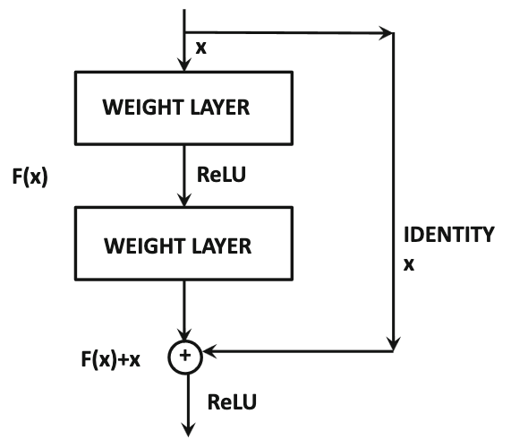
Sumber gambar: Aggarwal (2018) hal. 348
(Skip connection akan kalian temui kalau mempelajari residual network, yaitu arsitektur ResNet dan variasinya, yang sudah sangat di luar cakupan materi mata kuliah Sains Data.)
Untuk itu, diperlukan API selain Sequential, yaitu bisa dengan Functional API atau dengan Subclassing API. Agar kalian lebih mengenal Keras, kita akan mencoba membuat perceptron menggunakan dua API lainnya tersebut.
Kita bisa uji coba dengan dataset yang sama seperti di pertemuan sebelumnya: titik_negatif_positif.csv
df = pd.read_csv("./titik_negatif_positif.csv", dtype="float32")inputs_df = df.drop(columns=["kelas"])
targets_df = df[["kelas"]]inputs_arr = inputs_df.to_numpy()
targets_arr = targets_df.to_numpy()Functional API
Ide dari Functional API adalah menyusun tiap layer dan hubungan antar layer sebagai komposisi fungsi.
Untuk Functional API, daripada keras.layers.InputLayer, gunakan keras.layers.Input
m1_input = keras.layers.Input(shape = (2,))
m1_layer1_func = keras.layers.Dense(units = 1, activation = keras.activations.sigmoid)
m1_layer1_out = m1_layer1_func(m1_input) # seperti komposisi fungsi
model1 = keras.Model(inputs=m1_input, outputs=m1_layer1_out, name="model1")model1.summary()Model: "model1"
┏━━━━━━━━━━━━━━━━━━━━━━━━━━━━━━━━━┳━━━━━━━━━━━━━━━━━━━━━━━━┳━━━━━━━━━━━━━━━┓ ┃ Layer (type) ┃ Output Shape ┃ Param # ┃ ┡━━━━━━━━━━━━━━━━━━━━━━━━━━━━━━━━━╇━━━━━━━━━━━━━━━━━━━━━━━━╇━━━━━━━━━━━━━━━┩ │ input_layer_2 (InputLayer) │ (None, 2) │ 0 │ ├─────────────────────────────────┼────────────────────────┼───────────────┤ │ dense_2 (Dense) │ (None, 1) │ 3 │ └─────────────────────────────────┴────────────────────────┴───────────────┘
Total params: 3 (12.00 B)
Trainable params: 3 (12.00 B)
Non-trainable params: 0 (0.00 B)
keras.utils.plot_model(
model1,
show_shapes = True,
dpi=90,
show_layer_activations = True,
to_file = "keras_functional_model1.png"
)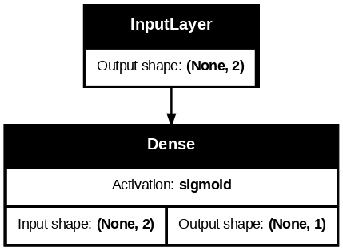
Sisanya (compile lalu fit) sama dengan Sequential API
model1.compile(
optimizer = keras.optimizers.SGD(learning_rate = 0.01),
loss = keras.losses.BinaryCrossentropy(),
metrics = [keras.metrics.BinaryAccuracy()]
)history1 = model1.fit(inputs_arr, targets_arr, epochs=100, validation_split=0.2)Epoch 1/100 50/50 ━━━━━━━━━━━━━━━━━━━━ 1s 8ms/step - binary_accuracy: 0.5514 - loss: 0.9587 - val_binary_accuracy: 0.1800 - val_loss: 1.0349 Epoch 2/100 50/50 ━━━━━━━━━━━━━━━━━━━━ 0s 4ms/step - binary_accuracy: 0.7520 - loss: 0.4645 - val_binary_accuracy: 0.7825 - val_loss: 0.5331 Epoch 3/100 50/50 ━━━━━━━━━━━━━━━━━━━━ 0s 4ms/step - binary_accuracy: 0.9507 - loss: 0.2794 - val_binary_accuracy: 0.9500 - val_loss: 0.3396 Epoch 4/100 50/50 ━━━━━━━━━━━━━━━━━━━━ 0s 3ms/step - binary_accuracy: 0.9894 - loss: 0.1936 - val_binary_accuracy: 0.9675 - val_loss: 0.2492 Epoch 5/100 50/50 ━━━━━━━━━━━━━━━━━━━━ 0s 3ms/step - binary_accuracy: 0.9928 - loss: 0.1603 - val_binary_accuracy: 0.9800 - val_loss: 0.1991 Epoch 6/100 50/50 ━━━━━━━━━━━━━━━━━━━━ 0s 4ms/step - binary_accuracy: 0.9951 - loss: 0.1297 - val_binary_accuracy: 0.9850 - val_loss: 0.1672 Epoch 7/100 50/50 ━━━━━━━━━━━━━━━━━━━━ 0s 4ms/step - binary_accuracy: 0.9956 - loss: 0.1105 - val_binary_accuracy: 0.9875 - val_loss: 0.1451 Epoch 8/100 50/50 ━━━━━━━━━━━━━━━━━━━━ 0s 5ms/step - binary_accuracy: 0.9964 - loss: 0.1003 - val_binary_accuracy: 0.9875 - val_loss: 0.1291 Epoch 9/100 50/50 ━━━━━━━━━━━━━━━━━━━━ 0s 4ms/step - binary_accuracy: 0.9976 - loss: 0.0895 - val_binary_accuracy: 0.9875 - val_loss: 0.1169 Epoch 10/100 50/50 ━━━━━━━━━━━━━━━━━━━━ 0s 4ms/step - binary_accuracy: 0.9975 - loss: 0.0810 - val_binary_accuracy: 0.9900 - val_loss: 0.1073 Epoch 11/100 50/50 ━━━━━━━━━━━━━━━━━━━━ 0s 4ms/step - binary_accuracy: 0.9983 - loss: 0.0744 - val_binary_accuracy: 0.9925 - val_loss: 0.0995 Epoch 12/100 50/50 ━━━━━━━━━━━━━━━━━━━━ 0s 3ms/step - binary_accuracy: 0.9982 - loss: 0.0744 - val_binary_accuracy: 0.9925 - val_loss: 0.0931 Epoch 13/100 50/50 ━━━━━━━━━━━━━━━━━━━━ 0s 3ms/step - binary_accuracy: 0.9985 - loss: 0.0675 - val_binary_accuracy: 0.9925 - val_loss: 0.0876 Epoch 14/100 50/50 ━━━━━━━━━━━━━━━━━━━━ 0s 4ms/step - binary_accuracy: 0.9992 - loss: 0.0587 - val_binary_accuracy: 0.9925 - val_loss: 0.0829 Epoch 15/100 50/50 ━━━━━━━━━━━━━━━━━━━━ 0s 4ms/step - binary_accuracy: 0.9977 - loss: 0.0624 - val_binary_accuracy: 0.9925 - val_loss: 0.0789 Epoch 16/100 50/50 ━━━━━━━━━━━━━━━━━━━━ 0s 4ms/step - binary_accuracy: 0.9986 - loss: 0.0596 - val_binary_accuracy: 0.9925 - val_loss: 0.0753 Epoch 17/100 50/50 ━━━━━━━━━━━━━━━━━━━━ 0s 3ms/step - binary_accuracy: 0.9958 - loss: 0.0562 - val_binary_accuracy: 0.9925 - val_loss: 0.0721 Epoch 18/100 50/50 ━━━━━━━━━━━━━━━━━━━━ 0s 3ms/step - binary_accuracy: 0.9979 - loss: 0.0493 - val_binary_accuracy: 0.9925 - val_loss: 0.0693 Epoch 19/100 50/50 ━━━━━━━━━━━━━━━━━━━━ 0s 4ms/step - binary_accuracy: 0.9979 - loss: 0.0508 - val_binary_accuracy: 0.9925 - val_loss: 0.0668 Epoch 20/100 50/50 ━━━━━━━━━━━━━━━━━━━━ 0s 3ms/step - binary_accuracy: 0.9957 - loss: 0.0512 - val_binary_accuracy: 0.9925 - val_loss: 0.0645 Epoch 21/100 50/50 ━━━━━━━━━━━━━━━━━━━━ 0s 3ms/step - binary_accuracy: 0.9988 - loss: 0.0450 - val_binary_accuracy: 0.9925 - val_loss: 0.0625 Epoch 22/100 50/50 ━━━━━━━━━━━━━━━━━━━━ 0s 4ms/step - binary_accuracy: 0.9983 - loss: 0.0457 - val_binary_accuracy: 0.9925 - val_loss: 0.0606 Epoch 23/100 50/50 ━━━━━━━━━━━━━━━━━━━━ 0s 3ms/step - binary_accuracy: 0.9980 - loss: 0.0416 - val_binary_accuracy: 0.9950 - val_loss: 0.0588 Epoch 24/100 50/50 ━━━━━━━━━━━━━━━━━━━━ 0s 3ms/step - binary_accuracy: 0.9957 - loss: 0.0431 - val_binary_accuracy: 0.9950 - val_loss: 0.0573 Epoch 25/100 50/50 ━━━━━━━━━━━━━━━━━━━━ 0s 3ms/step - binary_accuracy: 0.9992 - loss: 0.0370 - val_binary_accuracy: 0.9950 - val_loss: 0.0558 Epoch 26/100 50/50 ━━━━━━━━━━━━━━━━━━━━ 0s 3ms/step - binary_accuracy: 0.9988 - loss: 0.0380 - val_binary_accuracy: 0.9950 - val_loss: 0.0544 Epoch 27/100 50/50 ━━━━━━━━━━━━━━━━━━━━ 0s 5ms/step - binary_accuracy: 0.9986 - loss: 0.0379 - val_binary_accuracy: 0.9950 - val_loss: 0.0531 Epoch 28/100 50/50 ━━━━━━━━━━━━━━━━━━━━ 0s 4ms/step - binary_accuracy: 0.9983 - loss: 0.0364 - val_binary_accuracy: 0.9950 - val_loss: 0.0519 Epoch 29/100 50/50 ━━━━━━━━━━━━━━━━━━━━ 0s 3ms/step - binary_accuracy: 0.9967 - loss: 0.0364 - val_binary_accuracy: 0.9950 - val_loss: 0.0508 Epoch 30/100 50/50 ━━━━━━━━━━━━━━━━━━━━ 0s 4ms/step - binary_accuracy: 0.9976 - loss: 0.0376 - val_binary_accuracy: 0.9950 - val_loss: 0.0498 Epoch 31/100 50/50 ━━━━━━━━━━━━━━━━━━━━ 0s 3ms/step - binary_accuracy: 0.9962 - loss: 0.0364 - val_binary_accuracy: 0.9950 - val_loss: 0.0488 Epoch 32/100 50/50 ━━━━━━━━━━━━━━━━━━━━ 0s 4ms/step - binary_accuracy: 0.9987 - loss: 0.0322 - val_binary_accuracy: 0.9950 - val_loss: 0.0479 Epoch 33/100 50/50 ━━━━━━━━━━━━━━━━━━━━ 0s 4ms/step - binary_accuracy: 0.9980 - loss: 0.0309 - val_binary_accuracy: 0.9950 - val_loss: 0.0470 Epoch 34/100 50/50 ━━━━━━━━━━━━━━━━━━━━ 0s 3ms/step - binary_accuracy: 0.9982 - loss: 0.0315 - val_binary_accuracy: 0.9950 - val_loss: 0.0462 Epoch 35/100 50/50 ━━━━━━━━━━━━━━━━━━━━ 0s 4ms/step - binary_accuracy: 0.9971 - loss: 0.0294 - val_binary_accuracy: 0.9950 - val_loss: 0.0454 Epoch 36/100 50/50 ━━━━━━━━━━━━━━━━━━━━ 0s 6ms/step - binary_accuracy: 0.9961 - loss: 0.0327 - val_binary_accuracy: 0.9950 - val_loss: 0.0447 Epoch 37/100 50/50 ━━━━━━━━━━━━━━━━━━━━ 1s 5ms/step - binary_accuracy: 0.9970 - loss: 0.0310 - val_binary_accuracy: 0.9950 - val_loss: 0.0440 Epoch 38/100 50/50 ━━━━━━━━━━━━━━━━━━━━ 0s 5ms/step - binary_accuracy: 0.9976 - loss: 0.0287 - val_binary_accuracy: 0.9950 - val_loss: 0.0433 Epoch 39/100 50/50 ━━━━━━━━━━━━━━━━━━━━ 1s 7ms/step - binary_accuracy: 0.9972 - loss: 0.0284 - val_binary_accuracy: 0.9975 - val_loss: 0.0427 Epoch 40/100 50/50 ━━━━━━━━━━━━━━━━━━━━ 0s 4ms/step - binary_accuracy: 0.9993 - loss: 0.0259 - val_binary_accuracy: 0.9975 - val_loss: 0.0421 Epoch 41/100 50/50 ━━━━━━━━━━━━━━━━━━━━ 0s 3ms/step - binary_accuracy: 0.9982 - loss: 0.0278 - val_binary_accuracy: 0.9975 - val_loss: 0.0415 Epoch 42/100 50/50 ━━━━━━━━━━━━━━━━━━━━ 0s 3ms/step - binary_accuracy: 0.9983 - loss: 0.0288 - val_binary_accuracy: 0.9975 - val_loss: 0.0409 Epoch 43/100 50/50 ━━━━━━━━━━━━━━━━━━━━ 0s 4ms/step - binary_accuracy: 0.9995 - loss: 0.0255 - val_binary_accuracy: 0.9975 - val_loss: 0.0404 Epoch 44/100 50/50 ━━━━━━━━━━━━━━━━━━━━ 0s 4ms/step - binary_accuracy: 0.9987 - loss: 0.0273 - val_binary_accuracy: 0.9975 - val_loss: 0.0399 Epoch 45/100 50/50 ━━━━━━━━━━━━━━━━━━━━ 0s 4ms/step - binary_accuracy: 0.9978 - loss: 0.0259 - val_binary_accuracy: 0.9975 - val_loss: 0.0394 Epoch 46/100 50/50 ━━━━━━━━━━━━━━━━━━━━ 0s 4ms/step - binary_accuracy: 0.9977 - loss: 0.0257 - val_binary_accuracy: 0.9975 - val_loss: 0.0389 Epoch 47/100 50/50 ━━━━━━━━━━━━━━━━━━━━ 0s 4ms/step - binary_accuracy: 0.9979 - loss: 0.0258 - val_binary_accuracy: 0.9975 - val_loss: 0.0384 Epoch 48/100 50/50 ━━━━━━━━━━━━━━━━━━━━ 0s 3ms/step - binary_accuracy: 0.9981 - loss: 0.0272 - val_binary_accuracy: 0.9975 - val_loss: 0.0380 Epoch 49/100 50/50 ━━━━━━━━━━━━━━━━━━━━ 0s 3ms/step - binary_accuracy: 0.9966 - loss: 0.0263 - val_binary_accuracy: 0.9975 - val_loss: 0.0376 Epoch 50/100 50/50 ━━━━━━━━━━━━━━━━━━━━ 0s 4ms/step - binary_accuracy: 0.9984 - loss: 0.0237 - val_binary_accuracy: 0.9975 - val_loss: 0.0372 Epoch 51/100 50/50 ━━━━━━━━━━━━━━━━━━━━ 0s 4ms/step - binary_accuracy: 0.9964 - loss: 0.0284 - val_binary_accuracy: 0.9975 - val_loss: 0.0368 Epoch 52/100 50/50 ━━━━━━━━━━━━━━━━━━━━ 0s 4ms/step - binary_accuracy: 0.9960 - loss: 0.0256 - val_binary_accuracy: 0.9975 - val_loss: 0.0364 Epoch 53/100 50/50 ━━━━━━━━━━━━━━━━━━━━ 0s 3ms/step - binary_accuracy: 0.9977 - loss: 0.0244 - val_binary_accuracy: 0.9975 - val_loss: 0.0360 Epoch 54/100 50/50 ━━━━━━━━━━━━━━━━━━━━ 0s 3ms/step - binary_accuracy: 0.9979 - loss: 0.0276 - val_binary_accuracy: 0.9975 - val_loss: 0.0357 Epoch 55/100 50/50 ━━━━━━━━━━━━━━━━━━━━ 0s 4ms/step - binary_accuracy: 0.9971 - loss: 0.0263 - val_binary_accuracy: 0.9975 - val_loss: 0.0353 Epoch 56/100 50/50 ━━━━━━━━━━━━━━━━━━━━ 0s 4ms/step - binary_accuracy: 0.9970 - loss: 0.0254 - val_binary_accuracy: 0.9975 - val_loss: 0.0350 Epoch 57/100 50/50 ━━━━━━━━━━━━━━━━━━━━ 0s 3ms/step - binary_accuracy: 0.9971 - loss: 0.0256 - val_binary_accuracy: 0.9975 - val_loss: 0.0347 Epoch 58/100 50/50 ━━━━━━━━━━━━━━━━━━━━ 0s 4ms/step - binary_accuracy: 0.9976 - loss: 0.0238 - val_binary_accuracy: 0.9975 - val_loss: 0.0344 Epoch 59/100 50/50 ━━━━━━━━━━━━━━━━━━━━ 0s 4ms/step - binary_accuracy: 0.9983 - loss: 0.0200 - val_binary_accuracy: 0.9975 - val_loss: 0.0341 Epoch 60/100 50/50 ━━━━━━━━━━━━━━━━━━━━ 0s 4ms/step - binary_accuracy: 0.9943 - loss: 0.0304 - val_binary_accuracy: 0.9975 - val_loss: 0.0338 Epoch 61/100 50/50 ━━━━━━━━━━━━━━━━━━━━ 0s 3ms/step - binary_accuracy: 0.9992 - loss: 0.0225 - val_binary_accuracy: 0.9975 - val_loss: 0.0335 Epoch 62/100 50/50 ━━━━━━━━━━━━━━━━━━━━ 0s 3ms/step - binary_accuracy: 0.9957 - loss: 0.0253 - val_binary_accuracy: 0.9975 - val_loss: 0.0332 Epoch 63/100 50/50 ━━━━━━━━━━━━━━━━━━━━ 0s 4ms/step - binary_accuracy: 0.9975 - loss: 0.0243 - val_binary_accuracy: 0.9975 - val_loss: 0.0330 Epoch 64/100 50/50 ━━━━━━━━━━━━━━━━━━━━ 0s 3ms/step - binary_accuracy: 0.9968 - loss: 0.0233 - val_binary_accuracy: 0.9975 - val_loss: 0.0327 Epoch 65/100 50/50 ━━━━━━━━━━━━━━━━━━━━ 0s 3ms/step - binary_accuracy: 0.9981 - loss: 0.0188 - val_binary_accuracy: 0.9975 - val_loss: 0.0324 Epoch 66/100 50/50 ━━━━━━━━━━━━━━━━━━━━ 0s 3ms/step - binary_accuracy: 0.9994 - loss: 0.0195 - val_binary_accuracy: 0.9975 - val_loss: 0.0322 Epoch 67/100 50/50 ━━━━━━━━━━━━━━━━━━━━ 0s 3ms/step - binary_accuracy: 0.9992 - loss: 0.0188 - val_binary_accuracy: 0.9975 - val_loss: 0.0320 Epoch 68/100 50/50 ━━━━━━━━━━━━━━━━━━━━ 0s 3ms/step - binary_accuracy: 0.9978 - loss: 0.0215 - val_binary_accuracy: 0.9975 - val_loss: 0.0317 Epoch 69/100 50/50 ━━━━━━━━━━━━━━━━━━━━ 0s 4ms/step - binary_accuracy: 0.9938 - loss: 0.0259 - val_binary_accuracy: 0.9975 - val_loss: 0.0315 Epoch 70/100 50/50 ━━━━━━━━━━━━━━━━━━━━ 0s 3ms/step - binary_accuracy: 0.9983 - loss: 0.0214 - val_binary_accuracy: 0.9975 - val_loss: 0.0313 Epoch 71/100 50/50 ━━━━━━━━━━━━━━━━━━━━ 0s 4ms/step - binary_accuracy: 0.9973 - loss: 0.0208 - val_binary_accuracy: 0.9975 - val_loss: 0.0311 Epoch 72/100 50/50 ━━━━━━━━━━━━━━━━━━━━ 0s 5ms/step - binary_accuracy: 0.9953 - loss: 0.0209 - val_binary_accuracy: 0.9975 - val_loss: 0.0308 Epoch 73/100 50/50 ━━━━━━━━━━━━━━━━━━━━ 0s 3ms/step - binary_accuracy: 0.9987 - loss: 0.0194 - val_binary_accuracy: 0.9975 - val_loss: 0.0306 Epoch 74/100 50/50 ━━━━━━━━━━━━━━━━━━━━ 0s 4ms/step - binary_accuracy: 0.9977 - loss: 0.0227 - val_binary_accuracy: 0.9975 - val_loss: 0.0304 Epoch 75/100 50/50 ━━━━━━━━━━━━━━━━━━━━ 0s 4ms/step - binary_accuracy: 0.9980 - loss: 0.0205 - val_binary_accuracy: 0.9975 - val_loss: 0.0302 Epoch 76/100 50/50 ━━━━━━━━━━━━━━━━━━━━ 0s 4ms/step - binary_accuracy: 0.9987 - loss: 0.0173 - val_binary_accuracy: 0.9975 - val_loss: 0.0300 Epoch 77/100 50/50 ━━━━━━━━━━━━━━━━━━━━ 0s 5ms/step - binary_accuracy: 0.9990 - loss: 0.0170 - val_binary_accuracy: 0.9975 - val_loss: 0.0299 Epoch 78/100 50/50 ━━━━━━━━━━━━━━━━━━━━ 0s 6ms/step - binary_accuracy: 0.9959 - loss: 0.0232 - val_binary_accuracy: 0.9975 - val_loss: 0.0297 Epoch 79/100 50/50 ━━━━━━━━━━━━━━━━━━━━ 1s 5ms/step - binary_accuracy: 0.9938 - loss: 0.0242 - val_binary_accuracy: 0.9975 - val_loss: 0.0295 Epoch 80/100 50/50 ━━━━━━━━━━━━━━━━━━━━ 1s 8ms/step - binary_accuracy: 0.9958 - loss: 0.0220 - val_binary_accuracy: 0.9975 - val_loss: 0.0293 Epoch 81/100 50/50 ━━━━━━━━━━━━━━━━━━━━ 0s 4ms/step - binary_accuracy: 0.9975 - loss: 0.0191 - val_binary_accuracy: 0.9975 - val_loss: 0.0291 Epoch 82/100 50/50 ━━━━━━━━━━━━━━━━━━━━ 0s 3ms/step - binary_accuracy: 0.9973 - loss: 0.0208 - val_binary_accuracy: 0.9975 - val_loss: 0.0290 Epoch 83/100 50/50 ━━━━━━━━━━━━━━━━━━━━ 0s 3ms/step - binary_accuracy: 0.9987 - loss: 0.0171 - val_binary_accuracy: 0.9975 - val_loss: 0.0288 Epoch 84/100 50/50 ━━━━━━━━━━━━━━━━━━━━ 0s 4ms/step - binary_accuracy: 0.9966 - loss: 0.0221 - val_binary_accuracy: 0.9975 - val_loss: 0.0286 Epoch 85/100 50/50 ━━━━━━━━━━━━━━━━━━━━ 0s 3ms/step - binary_accuracy: 0.9973 - loss: 0.0181 - val_binary_accuracy: 0.9975 - val_loss: 0.0285 Epoch 86/100 50/50 ━━━━━━━━━━━━━━━━━━━━ 0s 4ms/step - binary_accuracy: 0.9983 - loss: 0.0183 - val_binary_accuracy: 0.9975 - val_loss: 0.0283 Epoch 87/100 50/50 ━━━━━━━━━━━━━━━━━━━━ 0s 3ms/step - binary_accuracy: 0.9957 - loss: 0.0256 - val_binary_accuracy: 0.9975 - val_loss: 0.0282 Epoch 88/100 50/50 ━━━━━━━━━━━━━━━━━━━━ 0s 4ms/step - binary_accuracy: 0.9983 - loss: 0.0193 - val_binary_accuracy: 0.9975 - val_loss: 0.0280 Epoch 89/100 50/50 ━━━━━━━━━━━━━━━━━━━━ 0s 4ms/step - binary_accuracy: 0.9981 - loss: 0.0181 - val_binary_accuracy: 0.9975 - val_loss: 0.0279 Epoch 90/100 50/50 ━━━━━━━━━━━━━━━━━━━━ 0s 4ms/step - binary_accuracy: 0.9964 - loss: 0.0187 - val_binary_accuracy: 0.9975 - val_loss: 0.0277 Epoch 91/100 50/50 ━━━━━━━━━━━━━━━━━━━━ 0s 4ms/step - binary_accuracy: 0.9982 - loss: 0.0208 - val_binary_accuracy: 0.9975 - val_loss: 0.0276 Epoch 92/100 50/50 ━━━━━━━━━━━━━━━━━━━━ 0s 3ms/step - binary_accuracy: 0.9976 - loss: 0.0164 - val_binary_accuracy: 0.9975 - val_loss: 0.0275 Epoch 93/100 50/50 ━━━━━━━━━━━━━━━━━━━━ 0s 4ms/step - binary_accuracy: 0.9962 - loss: 0.0236 - val_binary_accuracy: 0.9975 - val_loss: 0.0273 Epoch 94/100 50/50 ━━━━━━━━━━━━━━━━━━━━ 0s 4ms/step - binary_accuracy: 0.9949 - loss: 0.0219 - val_binary_accuracy: 0.9975 - val_loss: 0.0272 Epoch 95/100 50/50 ━━━━━━━━━━━━━━━━━━━━ 0s 4ms/step - binary_accuracy: 0.9977 - loss: 0.0186 - val_binary_accuracy: 0.9975 - val_loss: 0.0271 Epoch 96/100 50/50 ━━━━━━━━━━━━━━━━━━━━ 0s 4ms/step - binary_accuracy: 0.9989 - loss: 0.0159 - val_binary_accuracy: 0.9975 - val_loss: 0.0269 Epoch 97/100 50/50 ━━━━━━━━━━━━━━━━━━━━ 0s 4ms/step - binary_accuracy: 0.9986 - loss: 0.0156 - val_binary_accuracy: 0.9975 - val_loss: 0.0268 Epoch 98/100 50/50 ━━━━━━━━━━━━━━━━━━━━ 0s 4ms/step - binary_accuracy: 0.9979 - loss: 0.0196 - val_binary_accuracy: 0.9975 - val_loss: 0.0267 Epoch 99/100 50/50 ━━━━━━━━━━━━━━━━━━━━ 0s 3ms/step - binary_accuracy: 0.9986 - loss: 0.0174 - val_binary_accuracy: 0.9975 - val_loss: 0.0266 Epoch 100/100 50/50 ━━━━━━━━━━━━━━━━━━━━ 0s 3ms/step - binary_accuracy: 0.9959 - loss: 0.0201 - val_binary_accuracy: 0.9975 - val_loss: 0.0264
Kita bisa ubah dictionary .history menjadi CSV:
pd.DataFrame(history1.history).to_csv("./keras_functional_history1.csv", index=False)Silakan download kalau mau menyocokkan/membandingkan dengan modul: keras_functional_history1.csv
Import kembali:
history1_df = pd.read_csv("./keras_functional_history1.csv")Lalu plot loss:
plt.plot(history1_df["loss"], label = "training loss")
plt.plot(history1_df["val_loss"], label = "validation loss")
plt.xlabel("epoch")
plt.legend()
plt.show()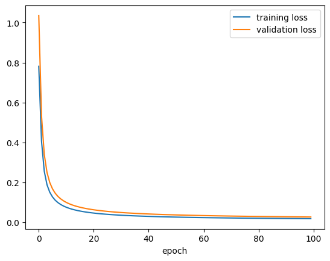
Subclassing API (yaitu dengan OOP)
Untuk model yang lebih kompleks, mungkin komposisi fungsi akan membuat pusing, karena banyak fungsi bertebaran di mana-mana. Agar lebih rapi dan terstruktur, kita bisa gunakan Subclassing API, yaitu dengan OOP / object oriented programming.
Silakan review Modul 2 Praktikum Struktur Data tentang Pengantar OOP kalau perlu ;)
Dalam Subclassing API, model yang kita buat berupa class yang meng-inherit (atau disebut subclassing) dari keras.Model yang sudah mengimplementasikan sebagian besar method yang kita butuhkan.
(Bahkan, kita juga bisa buat class yang hanya berupa kumpulan layer, yang nantinya akan masuk lagi ke class lain. Kalian bisa pelajari lebih lanjut: https://keras.io/guides/making_new_layers_and_models_via_subclassing/)
Dalam model yang kita susun, hanya diperlukan:
constructor
__init__berisi minimal satu baris, yaitusuper().__init__()dan boleh berisi baris lainnya untuk menyiapkan atribut (variabel) yang langsung bisa dibuat ketika model dibuat (sebelum mulai training)method
callyang mendefinisikan bagaimana forward pass(opsional) method
buildyang menyiapkan atribut yang bisa dibuat di awal training setelah ukuran input diketahui
class MyPerceptron(keras.Model):
def __init__(self, units=1):
super().__init__()
# banyaknya neuron di output layer
self.units = units
# menyiapkan parameter (weights and biases) tergantung ukuran input
def build(self, input_shape):
input_dim = input_shape[-1]
# matriks W terkadang disebut kernel
self.kernel = self.add_weight(
shape = (input_dim, self.units),
initializer = keras.initializers.RandomNormal(mean=0, stddev=0.05),
trainable = True,
)
self.bias = self.add_weight(
shape = (self.units,),
initializer = keras.initializers.RandomNormal(),
trainable = True
)
# forward pass
def call(self, inputs):
return tf.sigmoid(
tf.matmul(inputs, self.kernel) + self.bias
)Kita harus membuat instance atau objek dari class ini terlebih dahulu, lalu memanggil .build() dulu, agar kemudian bisa melakukan misalnya .fit()
model2 = MyPerceptron()model2.build(input_shape = (2,))Sekarang kita bisa compile, fit, simpan history, dan plot loss seperti biasa…
model2.compile(
optimizer = keras.optimizers.SGD(learning_rate = 0.01),
loss = keras.losses.BinaryCrossentropy(),
metrics = [keras.metrics.BinaryAccuracy()]
)history2 = model2.fit(inputs_arr, targets_arr, epochs=100, validation_split=0.2)Epoch 1/100 50/50 ━━━━━━━━━━━━━━━━━━━━ 1s 8ms/step - binary_accuracy: 0.9943 - loss: 0.5099 - val_binary_accuracy: 0.9875 - val_loss: 0.3759 Epoch 2/100 50/50 ━━━━━━━━━━━━━━━━━━━━ 0s 4ms/step - binary_accuracy: 0.9917 - loss: 0.2930 - val_binary_accuracy: 0.9875 - val_loss: 0.2786 Epoch 3/100 50/50 ━━━━━━━━━━━━━━━━━━━━ 0s 4ms/step - binary_accuracy: 0.9947 - loss: 0.2099 - val_binary_accuracy: 0.9875 - val_loss: 0.2223 Epoch 4/100 50/50 ━━━━━━━━━━━━━━━━━━━━ 0s 3ms/step - binary_accuracy: 0.9982 - loss: 0.1617 - val_binary_accuracy: 0.9900 - val_loss: 0.1860 Epoch 5/100 50/50 ━━━━━━━━━━━━━━━━━━━━ 0s 4ms/step - binary_accuracy: 0.9967 - loss: 0.1317 - val_binary_accuracy: 0.9900 - val_loss: 0.1609 Epoch 6/100 50/50 ━━━━━━━━━━━━━━━━━━━━ 0s 3ms/step - binary_accuracy: 0.9944 - loss: 0.1183 - val_binary_accuracy: 0.9900 - val_loss: 0.1426 Epoch 7/100 50/50 ━━━━━━━━━━━━━━━━━━━━ 0s 3ms/step - binary_accuracy: 0.9965 - loss: 0.1053 - val_binary_accuracy: 0.9900 - val_loss: 0.1285 Epoch 8/100 50/50 ━━━━━━━━━━━━━━━━━━━━ 0s 3ms/step - binary_accuracy: 0.9977 - loss: 0.0971 - val_binary_accuracy: 0.9900 - val_loss: 0.1175 Epoch 9/100 50/50 ━━━━━━━━━━━━━━━━━━━━ 0s 3ms/step - binary_accuracy: 0.9958 - loss: 0.0851 - val_binary_accuracy: 0.9900 - val_loss: 0.1086 Epoch 10/100 50/50 ━━━━━━━━━━━━━━━━━━━━ 0s 4ms/step - binary_accuracy: 0.9991 - loss: 0.0749 - val_binary_accuracy: 0.9900 - val_loss: 0.1011 Epoch 11/100 50/50 ━━━━━━━━━━━━━━━━━━━━ 0s 3ms/step - binary_accuracy: 0.9992 - loss: 0.0685 - val_binary_accuracy: 0.9900 - val_loss: 0.0948 Epoch 12/100 50/50 ━━━━━━━━━━━━━━━━━━━━ 0s 3ms/step - binary_accuracy: 0.9955 - loss: 0.0684 - val_binary_accuracy: 0.9900 - val_loss: 0.0895 Epoch 13/100 50/50 ━━━━━━━━━━━━━━━━━━━━ 0s 4ms/step - binary_accuracy: 0.9979 - loss: 0.0638 - val_binary_accuracy: 0.9925 - val_loss: 0.0849 Epoch 14/100 50/50 ━━━━━━━━━━━━━━━━━━━━ 0s 3ms/step - binary_accuracy: 0.9977 - loss: 0.0626 - val_binary_accuracy: 0.9925 - val_loss: 0.0808 Epoch 15/100 50/50 ━━━━━━━━━━━━━━━━━━━━ 0s 4ms/step - binary_accuracy: 0.9952 - loss: 0.0611 - val_binary_accuracy: 0.9925 - val_loss: 0.0772 Epoch 16/100 50/50 ━━━━━━━━━━━━━━━━━━━━ 0s 3ms/step - binary_accuracy: 0.9988 - loss: 0.0569 - val_binary_accuracy: 0.9925 - val_loss: 0.0741 Epoch 17/100 50/50 ━━━━━━━━━━━━━━━━━━━━ 0s 4ms/step - binary_accuracy: 0.9963 - loss: 0.0518 - val_binary_accuracy: 0.9925 - val_loss: 0.0712 Epoch 18/100 50/50 ━━━━━━━━━━━━━━━━━━━━ 0s 3ms/step - binary_accuracy: 0.9964 - loss: 0.0522 - val_binary_accuracy: 0.9925 - val_loss: 0.0687 Epoch 19/100 50/50 ━━━━━━━━━━━━━━━━━━━━ 0s 3ms/step - binary_accuracy: 0.9984 - loss: 0.0465 - val_binary_accuracy: 0.9925 - val_loss: 0.0664 Epoch 20/100 50/50 ━━━━━━━━━━━━━━━━━━━━ 0s 3ms/step - binary_accuracy: 0.9984 - loss: 0.0451 - val_binary_accuracy: 0.9925 - val_loss: 0.0643 Epoch 21/100 50/50 ━━━━━━━━━━━━━━━━━━━━ 0s 4ms/step - binary_accuracy: 0.9961 - loss: 0.0475 - val_binary_accuracy: 0.9925 - val_loss: 0.0624 Epoch 22/100 50/50 ━━━━━━━━━━━━━━━━━━━━ 0s 3ms/step - binary_accuracy: 0.9985 - loss: 0.0457 - val_binary_accuracy: 0.9925 - val_loss: 0.0606 Epoch 23/100 50/50 ━━━━━━━━━━━━━━━━━━━━ 0s 3ms/step - binary_accuracy: 0.9982 - loss: 0.0438 - val_binary_accuracy: 0.9925 - val_loss: 0.0589 Epoch 24/100 50/50 ━━━━━━━━━━━━━━━━━━━━ 0s 3ms/step - binary_accuracy: 0.9991 - loss: 0.0393 - val_binary_accuracy: 0.9925 - val_loss: 0.0574 Epoch 25/100 50/50 ━━━━━━━━━━━━━━━━━━━━ 0s 4ms/step - binary_accuracy: 0.9953 - loss: 0.0407 - val_binary_accuracy: 0.9925 - val_loss: 0.0560 Epoch 26/100 50/50 ━━━━━━━━━━━━━━━━━━━━ 0s 3ms/step - binary_accuracy: 0.9974 - loss: 0.0404 - val_binary_accuracy: 0.9925 - val_loss: 0.0547 Epoch 27/100 50/50 ━━━━━━━━━━━━━━━━━━━━ 0s 4ms/step - binary_accuracy: 0.9962 - loss: 0.0427 - val_binary_accuracy: 0.9925 - val_loss: 0.0534 Epoch 28/100 50/50 ━━━━━━━━━━━━━━━━━━━━ 0s 4ms/step - binary_accuracy: 0.9960 - loss: 0.0377 - val_binary_accuracy: 0.9925 - val_loss: 0.0523 Epoch 29/100 50/50 ━━━━━━━━━━━━━━━━━━━━ 0s 5ms/step - binary_accuracy: 0.9986 - loss: 0.0385 - val_binary_accuracy: 0.9925 - val_loss: 0.0512 Epoch 30/100 50/50 ━━━━━━━━━━━━━━━━━━━━ 1s 5ms/step - binary_accuracy: 0.9980 - loss: 0.0353 - val_binary_accuracy: 0.9925 - val_loss: 0.0502 Epoch 31/100 50/50 ━━━━━━━━━━━━━━━━━━━━ 0s 6ms/step - binary_accuracy: 0.9974 - loss: 0.0370 - val_binary_accuracy: 0.9925 - val_loss: 0.0492 Epoch 32/100 50/50 ━━━━━━━━━━━━━━━━━━━━ 0s 7ms/step - binary_accuracy: 0.9992 - loss: 0.0324 - val_binary_accuracy: 0.9925 - val_loss: 0.0483 Epoch 33/100 50/50 ━━━━━━━━━━━━━━━━━━━━ 1s 6ms/step - binary_accuracy: 0.9964 - loss: 0.0339 - val_binary_accuracy: 0.9925 - val_loss: 0.0475 Epoch 34/100 50/50 ━━━━━━━━━━━━━━━━━━━━ 0s 3ms/step - binary_accuracy: 0.9966 - loss: 0.0339 - val_binary_accuracy: 0.9925 - val_loss: 0.0467 Epoch 35/100 50/50 ━━━━━━━━━━━━━━━━━━━━ 0s 3ms/step - binary_accuracy: 0.9976 - loss: 0.0318 - val_binary_accuracy: 0.9925 - val_loss: 0.0459 Epoch 36/100 50/50 ━━━━━━━━━━━━━━━━━━━━ 0s 4ms/step - binary_accuracy: 0.9980 - loss: 0.0285 - val_binary_accuracy: 0.9925 - val_loss: 0.0452 Epoch 37/100 50/50 ━━━━━━━━━━━━━━━━━━━━ 0s 4ms/step - binary_accuracy: 0.9978 - loss: 0.0317 - val_binary_accuracy: 0.9925 - val_loss: 0.0445 Epoch 38/100 50/50 ━━━━━━━━━━━━━━━━━━━━ 0s 4ms/step - binary_accuracy: 0.9969 - loss: 0.0305 - val_binary_accuracy: 0.9925 - val_loss: 0.0438 Epoch 39/100 50/50 ━━━━━━━━━━━━━━━━━━━━ 0s 3ms/step - binary_accuracy: 0.9964 - loss: 0.0325 - val_binary_accuracy: 0.9925 - val_loss: 0.0432 Epoch 40/100 50/50 ━━━━━━━━━━━━━━━━━━━━ 0s 3ms/step - binary_accuracy: 0.9957 - loss: 0.0326 - val_binary_accuracy: 0.9925 - val_loss: 0.0426 Epoch 41/100 50/50 ━━━━━━━━━━━━━━━━━━━━ 0s 4ms/step - binary_accuracy: 0.9960 - loss: 0.0293 - val_binary_accuracy: 0.9925 - val_loss: 0.0420 Epoch 42/100 50/50 ━━━━━━━━━━━━━━━━━━━━ 0s 3ms/step - binary_accuracy: 0.9984 - loss: 0.0308 - val_binary_accuracy: 0.9925 - val_loss: 0.0415 Epoch 43/100 50/50 ━━━━━━━━━━━━━━━━━━━━ 0s 4ms/step - binary_accuracy: 0.9979 - loss: 0.0274 - val_binary_accuracy: 0.9925 - val_loss: 0.0409 Epoch 44/100 50/50 ━━━━━━━━━━━━━━━━━━━━ 0s 4ms/step - binary_accuracy: 0.9964 - loss: 0.0279 - val_binary_accuracy: 0.9925 - val_loss: 0.0404 Epoch 45/100 50/50 ━━━━━━━━━━━━━━━━━━━━ 0s 3ms/step - binary_accuracy: 0.9972 - loss: 0.0281 - val_binary_accuracy: 0.9925 - val_loss: 0.0399 Epoch 46/100 50/50 ━━━━━━━━━━━━━━━━━━━━ 0s 4ms/step - binary_accuracy: 0.9987 - loss: 0.0245 - val_binary_accuracy: 0.9925 - val_loss: 0.0395 Epoch 47/100 50/50 ━━━━━━━━━━━━━━━━━━━━ 0s 3ms/step - binary_accuracy: 0.9964 - loss: 0.0286 - val_binary_accuracy: 0.9925 - val_loss: 0.0390 Epoch 48/100 50/50 ━━━━━━━━━━━━━━━━━━━━ 0s 3ms/step - binary_accuracy: 0.9979 - loss: 0.0247 - val_binary_accuracy: 0.9925 - val_loss: 0.0386 Epoch 49/100 50/50 ━━━━━━━━━━━━━━━━━━━━ 0s 4ms/step - binary_accuracy: 0.9963 - loss: 0.0256 - val_binary_accuracy: 0.9925 - val_loss: 0.0381 Epoch 50/100 50/50 ━━━━━━━━━━━━━━━━━━━━ 0s 3ms/step - binary_accuracy: 0.9971 - loss: 0.0255 - val_binary_accuracy: 0.9925 - val_loss: 0.0377 Epoch 51/100 50/50 ━━━━━━━━━━━━━━━━━━━━ 0s 3ms/step - binary_accuracy: 0.9966 - loss: 0.0268 - val_binary_accuracy: 0.9925 - val_loss: 0.0373 Epoch 52/100 50/50 ━━━━━━━━━━━━━━━━━━━━ 0s 3ms/step - binary_accuracy: 0.9978 - loss: 0.0256 - val_binary_accuracy: 0.9925 - val_loss: 0.0370 Epoch 53/100 50/50 ━━━━━━━━━━━━━━━━━━━━ 0s 3ms/step - binary_accuracy: 0.9968 - loss: 0.0267 - val_binary_accuracy: 0.9925 - val_loss: 0.0366 Epoch 54/100 50/50 ━━━━━━━━━━━━━━━━━━━━ 0s 4ms/step - binary_accuracy: 0.9989 - loss: 0.0248 - val_binary_accuracy: 0.9925 - val_loss: 0.0362 Epoch 55/100 50/50 ━━━━━━━━━━━━━━━━━━━━ 0s 4ms/step - binary_accuracy: 0.9983 - loss: 0.0214 - val_binary_accuracy: 0.9925 - val_loss: 0.0359 Epoch 56/100 50/50 ━━━━━━━━━━━━━━━━━━━━ 0s 4ms/step - binary_accuracy: 0.9962 - loss: 0.0240 - val_binary_accuracy: 0.9925 - val_loss: 0.0356 Epoch 57/100 50/50 ━━━━━━━━━━━━━━━━━━━━ 0s 4ms/step - binary_accuracy: 0.9978 - loss: 0.0217 - val_binary_accuracy: 0.9925 - val_loss: 0.0353 Epoch 58/100 50/50 ━━━━━━━━━━━━━━━━━━━━ 0s 3ms/step - binary_accuracy: 0.9948 - loss: 0.0283 - val_binary_accuracy: 0.9925 - val_loss: 0.0349 Epoch 59/100 50/50 ━━━━━━━━━━━━━━━━━━━━ 0s 3ms/step - binary_accuracy: 0.9966 - loss: 0.0250 - val_binary_accuracy: 0.9925 - val_loss: 0.0346 Epoch 60/100 50/50 ━━━━━━━━━━━━━━━━━━━━ 0s 3ms/step - binary_accuracy: 0.9992 - loss: 0.0206 - val_binary_accuracy: 0.9925 - val_loss: 0.0343 Epoch 61/100 50/50 ━━━━━━━━━━━━━━━━━━━━ 0s 3ms/step - binary_accuracy: 0.9968 - loss: 0.0256 - val_binary_accuracy: 0.9925 - val_loss: 0.0340 Epoch 62/100 50/50 ━━━━━━━━━━━━━━━━━━━━ 0s 4ms/step - binary_accuracy: 0.9984 - loss: 0.0210 - val_binary_accuracy: 0.9925 - val_loss: 0.0338 Epoch 63/100 50/50 ━━━━━━━━━━━━━━━━━━━━ 0s 4ms/step - binary_accuracy: 0.9972 - loss: 0.0220 - val_binary_accuracy: 0.9925 - val_loss: 0.0335 Epoch 64/100 50/50 ━━━━━━━━━━━━━━━━━━━━ 0s 3ms/step - binary_accuracy: 0.9978 - loss: 0.0206 - val_binary_accuracy: 0.9925 - val_loss: 0.0332 Epoch 65/100 50/50 ━━━━━━━━━━━━━━━━━━━━ 0s 3ms/step - binary_accuracy: 0.9972 - loss: 0.0221 - val_binary_accuracy: 0.9925 - val_loss: 0.0330 Epoch 66/100 50/50 ━━━━━━━━━━━━━━━━━━━━ 0s 4ms/step - binary_accuracy: 0.9975 - loss: 0.0212 - val_binary_accuracy: 0.9925 - val_loss: 0.0327 Epoch 67/100 50/50 ━━━━━━━━━━━━━━━━━━━━ 0s 4ms/step - binary_accuracy: 0.9978 - loss: 0.0201 - val_binary_accuracy: 0.9925 - val_loss: 0.0325 Epoch 68/100 50/50 ━━━━━━━━━━━━━━━━━━━━ 0s 3ms/step - binary_accuracy: 0.9986 - loss: 0.0212 - val_binary_accuracy: 0.9925 - val_loss: 0.0322 Epoch 69/100 50/50 ━━━━━━━━━━━━━━━━━━━━ 0s 3ms/step - binary_accuracy: 0.9981 - loss: 0.0190 - val_binary_accuracy: 0.9925 - val_loss: 0.0320 Epoch 70/100 50/50 ━━━━━━━━━━━━━━━━━━━━ 0s 4ms/step - binary_accuracy: 0.9993 - loss: 0.0189 - val_binary_accuracy: 0.9925 - val_loss: 0.0318 Epoch 71/100 50/50 ━━━━━━━━━━━━━━━━━━━━ 0s 4ms/step - binary_accuracy: 0.9984 - loss: 0.0199 - val_binary_accuracy: 0.9925 - val_loss: 0.0316 Epoch 72/100 50/50 ━━━━━━━━━━━━━━━━━━━━ 0s 4ms/step - binary_accuracy: 0.9970 - loss: 0.0226 - val_binary_accuracy: 0.9925 - val_loss: 0.0314 Epoch 73/100 50/50 ━━━━━━━━━━━━━━━━━━━━ 0s 4ms/step - binary_accuracy: 0.9973 - loss: 0.0225 - val_binary_accuracy: 0.9950 - val_loss: 0.0312 Epoch 74/100 50/50 ━━━━━━━━━━━━━━━━━━━━ 0s 5ms/step - binary_accuracy: 0.9970 - loss: 0.0203 - val_binary_accuracy: 0.9950 - val_loss: 0.0309 Epoch 75/100 50/50 ━━━━━━━━━━━━━━━━━━━━ 1s 13ms/step - binary_accuracy: 0.9968 - loss: 0.0217 - val_binary_accuracy: 0.9950 - val_loss: 0.0307 Epoch 76/100 50/50 ━━━━━━━━━━━━━━━━━━━━ 1s 9ms/step - binary_accuracy: 0.9978 - loss: 0.0208 - val_binary_accuracy: 0.9950 - val_loss: 0.0306 Epoch 77/100 50/50 ━━━━━━━━━━━━━━━━━━━━ 0s 6ms/step - binary_accuracy: 0.9985 - loss: 0.0181 - val_binary_accuracy: 0.9950 - val_loss: 0.0304 Epoch 78/100 50/50 ━━━━━━━━━━━━━━━━━━━━ 0s 4ms/step - binary_accuracy: 0.9985 - loss: 0.0190 - val_binary_accuracy: 0.9950 - val_loss: 0.0302 Epoch 79/100 50/50 ━━━━━━━━━━━━━━━━━━━━ 0s 3ms/step - binary_accuracy: 0.9955 - loss: 0.0222 - val_binary_accuracy: 0.9950 - val_loss: 0.0300 Epoch 80/100 50/50 ━━━━━━━━━━━━━━━━━━━━ 0s 3ms/step - binary_accuracy: 0.9960 - loss: 0.0216 - val_binary_accuracy: 0.9950 - val_loss: 0.0298 Epoch 81/100 50/50 ━━━━━━━━━━━━━━━━━━━━ 0s 4ms/step - binary_accuracy: 0.9991 - loss: 0.0173 - val_binary_accuracy: 0.9950 - val_loss: 0.0296 Epoch 82/100 50/50 ━━━━━━━━━━━━━━━━━━━━ 0s 3ms/step - binary_accuracy: 0.9988 - loss: 0.0184 - val_binary_accuracy: 0.9950 - val_loss: 0.0295 Epoch 83/100 50/50 ━━━━━━━━━━━━━━━━━━━━ 0s 4ms/step - binary_accuracy: 0.9957 - loss: 0.0209 - val_binary_accuracy: 0.9950 - val_loss: 0.0293 Epoch 84/100 50/50 ━━━━━━━━━━━━━━━━━━━━ 0s 4ms/step - binary_accuracy: 0.9970 - loss: 0.0212 - val_binary_accuracy: 0.9950 - val_loss: 0.0291 Epoch 85/100 50/50 ━━━━━━━━━━━━━━━━━━━━ 0s 4ms/step - binary_accuracy: 0.9982 - loss: 0.0190 - val_binary_accuracy: 0.9950 - val_loss: 0.0290 Epoch 86/100 50/50 ━━━━━━━━━━━━━━━━━━━━ 0s 4ms/step - binary_accuracy: 0.9975 - loss: 0.0195 - val_binary_accuracy: 0.9950 - val_loss: 0.0288 Epoch 87/100 50/50 ━━━━━━━━━━━━━━━━━━━━ 0s 3ms/step - binary_accuracy: 0.9994 - loss: 0.0173 - val_binary_accuracy: 0.9950 - val_loss: 0.0287 Epoch 88/100 50/50 ━━━━━━━━━━━━━━━━━━━━ 0s 3ms/step - binary_accuracy: 0.9971 - loss: 0.0186 - val_binary_accuracy: 0.9950 - val_loss: 0.0285 Epoch 89/100 50/50 ━━━━━━━━━━━━━━━━━━━━ 0s 4ms/step - binary_accuracy: 0.9986 - loss: 0.0183 - val_binary_accuracy: 0.9950 - val_loss: 0.0284 Epoch 90/100 50/50 ━━━━━━━━━━━━━━━━━━━━ 0s 4ms/step - binary_accuracy: 0.9955 - loss: 0.0248 - val_binary_accuracy: 0.9950 - val_loss: 0.0282 Epoch 91/100 50/50 ━━━━━━━━━━━━━━━━━━━━ 0s 3ms/step - binary_accuracy: 0.9953 - loss: 0.0209 - val_binary_accuracy: 0.9950 - val_loss: 0.0281 Epoch 92/100 50/50 ━━━━━━━━━━━━━━━━━━━━ 0s 3ms/step - binary_accuracy: 0.9983 - loss: 0.0181 - val_binary_accuracy: 0.9950 - val_loss: 0.0279 Epoch 93/100 50/50 ━━━━━━━━━━━━━━━━━━━━ 0s 3ms/step - binary_accuracy: 0.9981 - loss: 0.0187 - val_binary_accuracy: 0.9950 - val_loss: 0.0278 Epoch 94/100 50/50 ━━━━━━━━━━━━━━━━━━━━ 0s 3ms/step - binary_accuracy: 0.9974 - loss: 0.0187 - val_binary_accuracy: 0.9950 - val_loss: 0.0277 Epoch 95/100 50/50 ━━━━━━━━━━━━━━━━━━━━ 0s 3ms/step - binary_accuracy: 0.9962 - loss: 0.0198 - val_binary_accuracy: 0.9950 - val_loss: 0.0275 Epoch 96/100 50/50 ━━━━━━━━━━━━━━━━━━━━ 0s 3ms/step - binary_accuracy: 0.9970 - loss: 0.0183 - val_binary_accuracy: 0.9950 - val_loss: 0.0274 Epoch 97/100 50/50 ━━━━━━━━━━━━━━━━━━━━ 0s 4ms/step - binary_accuracy: 0.9974 - loss: 0.0189 - val_binary_accuracy: 0.9950 - val_loss: 0.0273 Epoch 98/100 50/50 ━━━━━━━━━━━━━━━━━━━━ 0s 3ms/step - binary_accuracy: 0.9963 - loss: 0.0191 - val_binary_accuracy: 0.9950 - val_loss: 0.0271 Epoch 99/100 50/50 ━━━━━━━━━━━━━━━━━━━━ 0s 3ms/step - binary_accuracy: 0.9981 - loss: 0.0181 - val_binary_accuracy: 0.9950 - val_loss: 0.0270 Epoch 100/100 50/50 ━━━━━━━━━━━━━━━━━━━━ 0s 3ms/step - binary_accuracy: 0.9986 - loss: 0.0161 - val_binary_accuracy: 0.9950 - val_loss: 0.0269
pd.DataFrame(history2.history).to_csv("./keras_subclassing_history2.csv", index=False)Silakan download kalau mau menyocokkan/membandingkan dengan modul: keras_subclassing_history2.csv
history2_df = pd.read_csv("./keras_subclassing_history2.csv")plt.plot(history2_df["loss"], label = "training loss")
plt.plot(history2_df["val_loss"], label = "validation loss")
plt.xlabel("epoch")
plt.legend()
plt.show()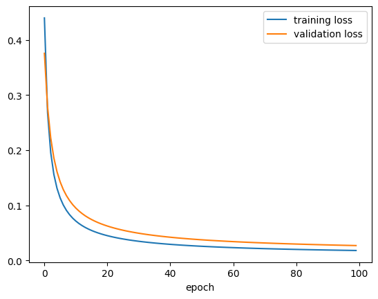
Sebenarnya, kalian bisa saja menggunakan Functional API di dalam class: siapkan fungsi-fungsinya di dalam constructor __init__ dan gunakan di dalam call
class MyPerceptron_v2(keras.Model):
def __init__(self, units=1):
super().__init__()
# banyaknya neuron di output layer
self.units = units
# siapkan fungsi
self.layer1_func = keras.layers.Dense(
units = self.units,
activation = keras.activations.sigmoid
)
# forward pass
def call(self, inputs):
x = self.layer1_func(inputs)
return xContoh skip connection dengan Functional API
Kita lihat lagi gambar skip connection:
Sumber gambar: Aggarwal (2018) hal. 348
Dari gambarnya, kita bisa coba susun neural network nya:
# x
f3_input = keras.layers.Input(shape = (5,))
# weight layers
f3_layer1_func = keras.layers.Dense(units = 10, activation = keras.activations.linear)
f3_layer2_func = keras.layers.Dense(units = 5, activation = keras.activations.relu)
# F(x)
F_out = f3_layer2_func(f3_layer1_func(f3_input))
# F(x) + x
f3_layer3_out = F_out + f3_input
# membuat model akhir
model3 = keras.Model(inputs=f3_input, outputs=f3_layer3_out, name="model3")model3.summary()Model: "model3"
┏━━━━━━━━━━━━━━━━━━━━━┳━━━━━━━━━━━━━━━━━━━┳━━━━━━━━━━━━┳━━━━━━━━━━━━━━━━━━━┓ ┃ Layer (type) ┃ Output Shape ┃ Param # ┃ Connected to ┃ ┡━━━━━━━━━━━━━━━━━━━━━╇━━━━━━━━━━━━━━━━━━━╇━━━━━━━━━━━━╇━━━━━━━━━━━━━━━━━━━┩ │ input_layer_3 │ (None, 5) │ 0 │ - │ │ (InputLayer) │ │ │ │ ├─────────────────────┼───────────────────┼────────────┼───────────────────┤ │ dense_3 (Dense) │ (None, 10) │ 60 │ input_layer_3[0]… │ ├─────────────────────┼───────────────────┼────────────┼───────────────────┤ │ dense_4 (Dense) │ (None, 5) │ 55 │ dense_3[0][0] │ ├─────────────────────┼───────────────────┼────────────┼───────────────────┤ │ add (Add) │ (None, 5) │ 0 │ dense_4[0][0], │ │ │ │ │ input_layer_3[0]… │ └─────────────────────┴───────────────────┴────────────┴───────────────────┘
Total params: 115 (460.00 B)
Trainable params: 115 (460.00 B)
Non-trainable params: 0 (0.00 B)
keras.utils.plot_model(
model3,
show_shapes = True,
dpi=90,
show_layer_activations = True,
to_file = "keras_functional_model3.png"
)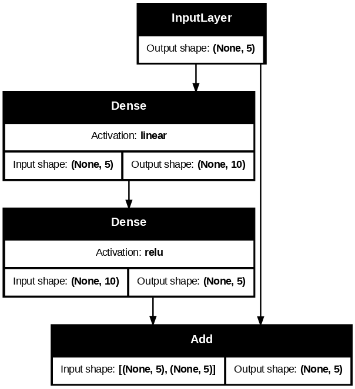
Apabila kode Functional API itu disusun ke dalam class, kodenya bisa menjadi seperti berikut:
class MySkipConnection(keras.Model):
def __init__(self, units=5):
super().__init__()
# banyaknya neuron di output layer
self.units = units
# siapkan fungsi-fungsi
self.weight1_func = keras.layers.Dense(
units = 10,
activation = keras.activations.linear
)
self.weight2_func = keras.layers.Dense(
units = self.units,
activation = keras.activations.relu
)
# forward pass
def call(self, inputs):
F_x = self.weight2_func(self.weight1_func(inputs))
x = inputs
hasil = F_x + x
return hasilNeural Network untuk Regresi
Ingat kembali, untuk regresi,
banyaknya neuron di input layer sesuai banyaknya fitur/variabel prediktor
banyaknya neuron di output layer sesuai banyaknya fitur/variabel target (biasanya hanya satu), dan fungsi aktivasi yang digunakan adalah fungsi aktivasi linier/identitas
fungsi aktivasi untuk semua hidden layer biasanya ReLU
Kita akan coba lagi dataset “California Housing Prices” (housing.csv) yang sudah kita gunakan di Modul 3 tentang regresi, yang bisa didownload dari salah satu sumber berikut:
Mari kita lihat isinya
housing_df = pd.read_csv("./housing.csv")housing_df| longitude | latitude | housing_median_age | total_rooms | total_bedrooms | population | households | median_income | median_house_value | ocean_proximity | |
|---|---|---|---|---|---|---|---|---|---|---|
| 0 | -122.23 | 37.88 | 41.0 | 880.0 | 129.0 | 322.0 | 126.0 | 8.3252 | 452600.0 | NEAR BAY |
| 1 | -122.22 | 37.86 | 21.0 | 7099.0 | 1106.0 | 2401.0 | 1138.0 | 8.3014 | 358500.0 | NEAR BAY |
| 2 | -122.24 | 37.85 | 52.0 | 1467.0 | 190.0 | 496.0 | 177.0 | 7.2574 | 352100.0 | NEAR BAY |
| 3 | -122.25 | 37.85 | 52.0 | 1274.0 | 235.0 | 558.0 | 219.0 | 5.6431 | 341300.0 | NEAR BAY |
| 4 | -122.25 | 37.85 | 52.0 | 1627.0 | 280.0 | 565.0 | 259.0 | 3.8462 | 342200.0 | NEAR BAY |
| ... | ... | ... | ... | ... | ... | ... | ... | ... | ... | ... |
| 20635 | -121.09 | 39.48 | 25.0 | 1665.0 | 374.0 | 845.0 | 330.0 | 1.5603 | 78100.0 | INLAND |
| 20636 | -121.21 | 39.49 | 18.0 | 697.0 | 150.0 | 356.0 | 114.0 | 2.5568 | 77100.0 | INLAND |
| 20637 | -121.22 | 39.43 | 17.0 | 2254.0 | 485.0 | 1007.0 | 433.0 | 1.7000 | 92300.0 | INLAND |
| 20638 | -121.32 | 39.43 | 18.0 | 1860.0 | 409.0 | 741.0 | 349.0 | 1.8672 | 84700.0 | INLAND |
| 20639 | -121.24 | 39.37 | 16.0 | 2785.0 | 616.0 | 1387.0 | 530.0 | 2.3886 | 89400.0 | INLAND |
20640 rows × 10 columns
Kalau mau, kalian bisa melakukan encoding data kategorik ocean_proximity seperti di Modul 2. Tapi kali ini kita hapus/drop saja
housing_df = housing_df.drop(columns=["ocean_proximity"])housing_df| longitude | latitude | housing_median_age | total_rooms | total_bedrooms | population | households | median_income | median_house_value | |
|---|---|---|---|---|---|---|---|---|---|
| 0 | -122.23 | 37.88 | 41.0 | 880.0 | 129.0 | 322.0 | 126.0 | 8.3252 | 452600.0 |
| 1 | -122.22 | 37.86 | 21.0 | 7099.0 | 1106.0 | 2401.0 | 1138.0 | 8.3014 | 358500.0 |
| 2 | -122.24 | 37.85 | 52.0 | 1467.0 | 190.0 | 496.0 | 177.0 | 7.2574 | 352100.0 |
| 3 | -122.25 | 37.85 | 52.0 | 1274.0 | 235.0 | 558.0 | 219.0 | 5.6431 | 341300.0 |
| 4 | -122.25 | 37.85 | 52.0 | 1627.0 | 280.0 | 565.0 | 259.0 | 3.8462 | 342200.0 |
| ... | ... | ... | ... | ... | ... | ... | ... | ... | ... |
| 20635 | -121.09 | 39.48 | 25.0 | 1665.0 | 374.0 | 845.0 | 330.0 | 1.5603 | 78100.0 |
| 20636 | -121.21 | 39.49 | 18.0 | 697.0 | 150.0 | 356.0 | 114.0 | 2.5568 | 77100.0 |
| 20637 | -121.22 | 39.43 | 17.0 | 2254.0 | 485.0 | 1007.0 | 433.0 | 1.7000 | 92300.0 |
| 20638 | -121.32 | 39.43 | 18.0 | 1860.0 | 409.0 | 741.0 | 349.0 | 1.8672 | 84700.0 |
| 20639 | -121.24 | 39.37 | 16.0 | 2785.0 | 616.0 | 1387.0 | 530.0 | 2.3886 | 89400.0 |
20640 rows × 9 columns
Ingat bahwa variabel target (variabel yang ingin kita prediksi) adalah median_house_value. Kita pisah dulu antara variabel prediktor (X atau inputs) dan variabel target (y atau target)
housing_X_df = housing_df.drop(columns=["median_house_value"])
housing_y_df = housing_df[["median_house_value"]]Lalu kita ubah jadi numpy array agar bisa diolah Keras
housing_X_arr = housing_X_df.to_numpy()
housing_y_arr = housing_y_df.to_numpy()print(housing_X_arr.shape)
print(housing_y_arr.shape)(20640, 8)
(20640, 1)Train test split, standarisasi:
from sklearn.model_selection import train_test_splitX_train, X_test, y_train, y_test = train_test_split(
housing_X_arr, housing_y_arr, test_size=0.1, random_state=42
)from sklearn.preprocessing import StandardScalerscaler = StandardScaler()
X_train = scaler.fit_transform(X_train)
X_test = scaler.transform(X_test)Data target juga relatif sangat besar, sehingga sebaiknya kita scaling juga:
print(f'y min: {y_train.min()}')
print(f'y max: {y_train.max()}')y min: 14999.0
y max: 500001.0y_train /= 100000
y_test /= 100000print(f'y min: {y_train.min()}')
print(f'y max: {y_train.max()}')y min: 0.14999
y max: 5.00001Sekarang kita bisa susun modelnya
keras.backend.clear_session()model4 = keras.Sequential(
[
keras.layers.InputLayer(shape = (housing_X_arr.shape[1:])),
keras.layers.Dense(units = 15, activation = keras.activations.relu),
keras.layers.Dense(units = 30, activation = keras.activations.relu),
keras.layers.Dense(units = 1, activation = keras.activations.linear)
]
)model4.summary()Model: "sequential_1"
┏━━━━━━━━━━━━━━━━━━━━━━━━━━━━━━━━━┳━━━━━━━━━━━━━━━━━━━━━━━━┳━━━━━━━━━━━━━━━┓ ┃ Layer (type) ┃ Output Shape ┃ Param # ┃ ┡━━━━━━━━━━━━━━━━━━━━━━━━━━━━━━━━━╇━━━━━━━━━━━━━━━━━━━━━━━━╇━━━━━━━━━━━━━━━┩ │ dense_3 (Dense) │ (None, 15) │ 135 │ ├─────────────────────────────────┼────────────────────────┼───────────────┤ │ dense_4 (Dense) │ (None, 30) │ 480 │ ├─────────────────────────────────┼────────────────────────┼───────────────┤ │ dense_5 (Dense) │ (None, 1) │ 31 │ └─────────────────────────────────┴────────────────────────┴───────────────┘
Total params: 646 (2.52 KB)
Trainable params: 646 (2.52 KB)
Non-trainable params: 0 (0.00 B)
keras.utils.plot_model(
model4,
show_shapes = True,
dpi=90,
show_layer_activations = True,
to_file = "keras_sequential_model4.png"
)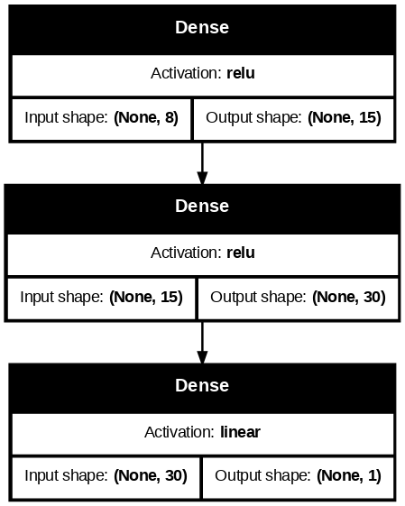
Selanjutnya, kita tentukan hyperparameter: optimizer, loss function, dan accuracy.
Ingat kembali, untuk regresi, loss function yang biasa digunakan adalah MSE (Mean Squared Error)
early_stop = keras.callbacks.EarlyStopping(
patience=5, monitor='val_loss', restore_best_weights=True, verbose=1
)model4.compile(
optimizer = keras.optimizers.Adam(learning_rate = 0.001),
loss = keras.losses.MeanSquaredError(),
metrics = [keras.metrics.Accuracy()]
)history4 = model4.fit(X_train, y_train, epochs=100, validation_split=1/9)Epoch 1/100 516/516 ━━━━━━━━━━━━━━━━━━━━ 3s 3ms/step - accuracy: 0.0000e+00 - loss: 3.5122 - val_accuracy: 0.0000e+00 - val_loss: 0.5872 Epoch 2/100 516/516 ━━━━━━━━━━━━━━━━━━━━ 2s 2ms/step - accuracy: 0.0000e+00 - loss: 0.5322 - val_accuracy: 0.0000e+00 - val_loss: 0.4665 Epoch 3/100 516/516 ━━━━━━━━━━━━━━━━━━━━ 1s 2ms/step - accuracy: 0.0000e+00 - loss: 0.4251 - val_accuracy: 0.0000e+00 - val_loss: 0.4366 Epoch 4/100 516/516 ━━━━━━━━━━━━━━━━━━━━ 1s 2ms/step - accuracy: 0.0000e+00 - loss: 0.4054 - val_accuracy: 0.0000e+00 - val_loss: 0.4219 Epoch 5/100 516/516 ━━━━━━━━━━━━━━━━━━━━ 3s 4ms/step - accuracy: 0.0000e+00 - loss: 0.3723 - val_accuracy: 0.0000e+00 - val_loss: 0.4157 Epoch 6/100 516/516 ━━━━━━━━━━━━━━━━━━━━ 2s 3ms/step - accuracy: 0.0000e+00 - loss: 0.3596 - val_accuracy: 0.0000e+00 - val_loss: 0.3996 Epoch 7/100 516/516 ━━━━━━━━━━━━━━━━━━━━ 1s 2ms/step - accuracy: 0.0000e+00 - loss: 0.3573 - val_accuracy: 0.0000e+00 - val_loss: 0.4091 Epoch 8/100 516/516 ━━━━━━━━━━━━━━━━━━━━ 1s 2ms/step - accuracy: 0.0000e+00 - loss: 0.3620 - val_accuracy: 0.0000e+00 - val_loss: 0.3924 Epoch 9/100 516/516 ━━━━━━━━━━━━━━━━━━━━ 3s 2ms/step - accuracy: 0.0000e+00 - loss: 0.3440 - val_accuracy: 0.0000e+00 - val_loss: 0.3816 Epoch 10/100 516/516 ━━━━━━━━━━━━━━━━━━━━ 1s 2ms/step - accuracy: 0.0000e+00 - loss: 0.3383 - val_accuracy: 0.0000e+00 - val_loss: 0.3840 Epoch 11/100 516/516 ━━━━━━━━━━━━━━━━━━━━ 1s 3ms/step - accuracy: 0.0000e+00 - loss: 0.3322 - val_accuracy: 0.0000e+00 - val_loss: 0.3749 Epoch 12/100 516/516 ━━━━━━━━━━━━━━━━━━━━ 2s 4ms/step - accuracy: 0.0000e+00 - loss: 0.3322 - val_accuracy: 0.0000e+00 - val_loss: 0.3669 Epoch 13/100 516/516 ━━━━━━━━━━━━━━━━━━━━ 2s 2ms/step - accuracy: 0.0000e+00 - loss: 0.3320 - val_accuracy: 0.0000e+00 - val_loss: 0.3650 Epoch 14/100 516/516 ━━━━━━━━━━━━━━━━━━━━ 1s 2ms/step - accuracy: 0.0000e+00 - loss: 0.3287 - val_accuracy: 0.0000e+00 - val_loss: 0.3640 Epoch 15/100 516/516 ━━━━━━━━━━━━━━━━━━━━ 1s 2ms/step - accuracy: 0.0000e+00 - loss: 0.3248 - val_accuracy: 0.0000e+00 - val_loss: 0.3625 Epoch 16/100 516/516 ━━━━━━━━━━━━━━━━━━━━ 1s 3ms/step - accuracy: 0.0000e+00 - loss: 0.3192 - val_accuracy: 0.0000e+00 - val_loss: 0.3654 Epoch 17/100 516/516 ━━━━━━━━━━━━━━━━━━━━ 3s 3ms/step - accuracy: 0.0000e+00 - loss: 0.3173 - val_accuracy: 0.0000e+00 - val_loss: 0.3545 Epoch 18/100 516/516 ━━━━━━━━━━━━━━━━━━━━ 3s 3ms/step - accuracy: 0.0000e+00 - loss: 0.3188 - val_accuracy: 0.0000e+00 - val_loss: 0.3528 Epoch 19/100 516/516 ━━━━━━━━━━━━━━━━━━━━ 2s 4ms/step - accuracy: 0.0000e+00 - loss: 0.3116 - val_accuracy: 0.0000e+00 - val_loss: 0.3555 Epoch 20/100 516/516 ━━━━━━━━━━━━━━━━━━━━ 2s 2ms/step - accuracy: 0.0000e+00 - loss: 0.3107 - val_accuracy: 0.0000e+00 - val_loss: 0.3495 Epoch 21/100 516/516 ━━━━━━━━━━━━━━━━━━━━ 1s 2ms/step - accuracy: 0.0000e+00 - loss: 0.3066 - val_accuracy: 0.0000e+00 - val_loss: 0.3530 Epoch 22/100 516/516 ━━━━━━━━━━━━━━━━━━━━ 1s 2ms/step - accuracy: 0.0000e+00 - loss: 0.3234 - val_accuracy: 0.0000e+00 - val_loss: 0.3467 Epoch 23/100 516/516 ━━━━━━━━━━━━━━━━━━━━ 3s 3ms/step - accuracy: 0.0000e+00 - loss: 0.3042 - val_accuracy: 0.0000e+00 - val_loss: 0.3470 Epoch 24/100 516/516 ━━━━━━━━━━━━━━━━━━━━ 2s 2ms/step - accuracy: 0.0000e+00 - loss: 0.3006 - val_accuracy: 0.0000e+00 - val_loss: 0.3495 Epoch 25/100 516/516 ━━━━━━━━━━━━━━━━━━━━ 2s 3ms/step - accuracy: 0.0000e+00 - loss: 0.3013 - val_accuracy: 0.0000e+00 - val_loss: 0.3533 Epoch 26/100 516/516 ━━━━━━━━━━━━━━━━━━━━ 2s 3ms/step - accuracy: 0.0000e+00 - loss: 0.3031 - val_accuracy: 0.0000e+00 - val_loss: 0.3479 Epoch 27/100 516/516 ━━━━━━━━━━━━━━━━━━━━ 1s 3ms/step - accuracy: 0.0000e+00 - loss: 0.3034 - val_accuracy: 0.0000e+00 - val_loss: 0.3582 Epoch 28/100 516/516 ━━━━━━━━━━━━━━━━━━━━ 1s 3ms/step - accuracy: 0.0000e+00 - loss: 0.3077 - val_accuracy: 0.0000e+00 - val_loss: 0.3410 Epoch 29/100 516/516 ━━━━━━━━━━━━━━━━━━━━ 3s 3ms/step - accuracy: 0.0000e+00 - loss: 0.2935 - val_accuracy: 0.0000e+00 - val_loss: 0.3453 Epoch 30/100 516/516 ━━━━━━━━━━━━━━━━━━━━ 1s 3ms/step - accuracy: 0.0000e+00 - loss: 0.2911 - val_accuracy: 0.0000e+00 - val_loss: 0.3439 Epoch 31/100 516/516 ━━━━━━━━━━━━━━━━━━━━ 3s 3ms/step - accuracy: 0.0000e+00 - loss: 0.2921 - val_accuracy: 0.0000e+00 - val_loss: 0.3392 Epoch 32/100 516/516 ━━━━━━━━━━━━━━━━━━━━ 2s 3ms/step - accuracy: 0.0000e+00 - loss: 0.2954 - val_accuracy: 0.0000e+00 - val_loss: 0.3393 Epoch 33/100 516/516 ━━━━━━━━━━━━━━━━━━━━ 1s 2ms/step - accuracy: 0.0000e+00 - loss: 0.3028 - val_accuracy: 0.0000e+00 - val_loss: 0.3401 Epoch 34/100 516/516 ━━━━━━━━━━━━━━━━━━━━ 3s 2ms/step - accuracy: 0.0000e+00 - loss: 0.2932 - val_accuracy: 0.0000e+00 - val_loss: 0.3326 Epoch 35/100 516/516 ━━━━━━━━━━━━━━━━━━━━ 1s 3ms/step - accuracy: 0.0000e+00 - loss: 0.2791 - val_accuracy: 0.0000e+00 - val_loss: 0.3387 Epoch 36/100 516/516 ━━━━━━━━━━━━━━━━━━━━ 1s 2ms/step - accuracy: 0.0000e+00 - loss: 0.2888 - val_accuracy: 0.0000e+00 - val_loss: 0.3346 Epoch 37/100 516/516 ━━━━━━━━━━━━━━━━━━━━ 3s 2ms/step - accuracy: 0.0000e+00 - loss: 0.2886 - val_accuracy: 0.0000e+00 - val_loss: 0.3330 Epoch 38/100 516/516 ━━━━━━━━━━━━━━━━━━━━ 3s 4ms/step - accuracy: 0.0000e+00 - loss: 0.2891 - val_accuracy: 0.0000e+00 - val_loss: 0.3303 Epoch 39/100 516/516 ━━━━━━━━━━━━━━━━━━━━ 2s 3ms/step - accuracy: 0.0000e+00 - loss: 0.2820 - val_accuracy: 0.0000e+00 - val_loss: 0.3258 Epoch 40/100 516/516 ━━━━━━━━━━━━━━━━━━━━ 1s 3ms/step - accuracy: 0.0000e+00 - loss: 0.2832 - val_accuracy: 0.0000e+00 - val_loss: 0.3251 Epoch 41/100 516/516 ━━━━━━━━━━━━━━━━━━━━ 3s 3ms/step - accuracy: 0.0000e+00 - loss: 0.2929 - val_accuracy: 0.0000e+00 - val_loss: 0.3254 Epoch 42/100 516/516 ━━━━━━━━━━━━━━━━━━━━ 1s 3ms/step - accuracy: 0.0000e+00 - loss: 0.2831 - val_accuracy: 0.0000e+00 - val_loss: 0.3283 Epoch 43/100 516/516 ━━━━━━━━━━━━━━━━━━━━ 3s 4ms/step - accuracy: 0.0000e+00 - loss: 0.2867 - val_accuracy: 0.0000e+00 - val_loss: 0.3238 Epoch 44/100 516/516 ━━━━━━━━━━━━━━━━━━━━ 2s 3ms/step - accuracy: 0.0000e+00 - loss: 0.2872 - val_accuracy: 0.0000e+00 - val_loss: 0.3277 Epoch 45/100 516/516 ━━━━━━━━━━━━━━━━━━━━ 1s 3ms/step - accuracy: 0.0000e+00 - loss: 0.2838 - val_accuracy: 0.0000e+00 - val_loss: 0.3208 Epoch 46/100 516/516 ━━━━━━━━━━━━━━━━━━━━ 3s 3ms/step - accuracy: 0.0000e+00 - loss: 0.2879 - val_accuracy: 0.0000e+00 - val_loss: 0.3231 Epoch 47/100 516/516 ━━━━━━━━━━━━━━━━━━━━ 3s 2ms/step - accuracy: 0.0000e+00 - loss: 0.2849 - val_accuracy: 0.0000e+00 - val_loss: 0.3202 Epoch 48/100 516/516 ━━━━━━━━━━━━━━━━━━━━ 1s 3ms/step - accuracy: 0.0000e+00 - loss: 0.2874 - val_accuracy: 0.0000e+00 - val_loss: 0.3221 Epoch 49/100 516/516 ━━━━━━━━━━━━━━━━━━━━ 1s 2ms/step - accuracy: 0.0000e+00 - loss: 0.2856 - val_accuracy: 0.0000e+00 - val_loss: 0.3220 Epoch 50/100 516/516 ━━━━━━━━━━━━━━━━━━━━ 3s 3ms/step - accuracy: 0.0000e+00 - loss: 0.2848 - val_accuracy: 0.0000e+00 - val_loss: 0.3187 Epoch 51/100 516/516 ━━━━━━━━━━━━━━━━━━━━ 1s 2ms/step - accuracy: 0.0000e+00 - loss: 0.2791 - val_accuracy: 0.0000e+00 - val_loss: 0.3258 Epoch 52/100 516/516 ━━━━━━━━━━━━━━━━━━━━ 1s 3ms/step - accuracy: 0.0000e+00 - loss: 0.2770 - val_accuracy: 0.0000e+00 - val_loss: 0.3170 Epoch 53/100 516/516 ━━━━━━━━━━━━━━━━━━━━ 1s 2ms/step - accuracy: 0.0000e+00 - loss: 0.2817 - val_accuracy: 0.0000e+00 - val_loss: 0.3238 Epoch 54/100 516/516 ━━━━━━━━━━━━━━━━━━━━ 1s 2ms/step - accuracy: 0.0000e+00 - loss: 0.2719 - val_accuracy: 0.0000e+00 - val_loss: 0.3213 Epoch 55/100 516/516 ━━━━━━━━━━━━━━━━━━━━ 3s 3ms/step - accuracy: 0.0000e+00 - loss: 0.2789 - val_accuracy: 0.0000e+00 - val_loss: 0.3182 Epoch 56/100 516/516 ━━━━━━━━━━━━━━━━━━━━ 1s 2ms/step - accuracy: 0.0000e+00 - loss: 0.2721 - val_accuracy: 0.0000e+00 - val_loss: 0.3150 Epoch 57/100 516/516 ━━━━━━━━━━━━━━━━━━━━ 3s 3ms/step - accuracy: 0.0000e+00 - loss: 0.2726 - val_accuracy: 0.0000e+00 - val_loss: 0.3169 Epoch 58/100 516/516 ━━━━━━━━━━━━━━━━━━━━ 1s 3ms/step - accuracy: 0.0000e+00 - loss: 0.2736 - val_accuracy: 0.0000e+00 - val_loss: 0.3141 Epoch 59/100 516/516 ━━━━━━━━━━━━━━━━━━━━ 1s 3ms/step - accuracy: 0.0000e+00 - loss: 0.2760 - val_accuracy: 0.0000e+00 - val_loss: 0.3233 Epoch 60/100 516/516 ━━━━━━━━━━━━━━━━━━━━ 2s 3ms/step - accuracy: 0.0000e+00 - loss: 0.2723 - val_accuracy: 0.0000e+00 - val_loss: 0.3166 Epoch 61/100 516/516 ━━━━━━━━━━━━━━━━━━━━ 1s 3ms/step - accuracy: 0.0000e+00 - loss: 0.2637 - val_accuracy: 0.0000e+00 - val_loss: 0.3158 Epoch 62/100 516/516 ━━━━━━━━━━━━━━━━━━━━ 3s 3ms/step - accuracy: 0.0000e+00 - loss: 0.2690 - val_accuracy: 0.0000e+00 - val_loss: 0.3158 Epoch 63/100 516/516 ━━━━━━━━━━━━━━━━━━━━ 2s 4ms/step - accuracy: 0.0000e+00 - loss: 0.2657 - val_accuracy: 0.0000e+00 - val_loss: 0.3294 Epoch 64/100 516/516 ━━━━━━━━━━━━━━━━━━━━ 1s 3ms/step - accuracy: 0.0000e+00 - loss: 0.2822 - val_accuracy: 0.0000e+00 - val_loss: 0.3143 Epoch 65/100 516/516 ━━━━━━━━━━━━━━━━━━━━ 3s 3ms/step - accuracy: 0.0000e+00 - loss: 0.2754 - val_accuracy: 0.0000e+00 - val_loss: 0.3258 Epoch 66/100 516/516 ━━━━━━━━━━━━━━━━━━━━ 1s 2ms/step - accuracy: 0.0000e+00 - loss: 0.2616 - val_accuracy: 0.0000e+00 - val_loss: 0.3147 Epoch 67/100 516/516 ━━━━━━━━━━━━━━━━━━━━ 3s 2ms/step - accuracy: 0.0000e+00 - loss: 0.2773 - val_accuracy: 0.0000e+00 - val_loss: 0.3255 Epoch 68/100 516/516 ━━━━━━━━━━━━━━━━━━━━ 1s 3ms/step - accuracy: 0.0000e+00 - loss: 0.2737 - val_accuracy: 0.0000e+00 - val_loss: 0.3157 Epoch 69/100 516/516 ━━━━━━━━━━━━━━━━━━━━ 3s 4ms/step - accuracy: 0.0000e+00 - loss: 0.2663 - val_accuracy: 0.0000e+00 - val_loss: 0.3138 Epoch 70/100 516/516 ━━━━━━━━━━━━━━━━━━━━ 2s 3ms/step - accuracy: 0.0000e+00 - loss: 0.2717 - val_accuracy: 0.0000e+00 - val_loss: 0.3091 Epoch 71/100 516/516 ━━━━━━━━━━━━━━━━━━━━ 3s 3ms/step - accuracy: 0.0000e+00 - loss: 0.2694 - val_accuracy: 0.0000e+00 - val_loss: 0.3121 Epoch 72/100 516/516 ━━━━━━━━━━━━━━━━━━━━ 3s 3ms/step - accuracy: 0.0000e+00 - loss: 0.2678 - val_accuracy: 0.0000e+00 - val_loss: 0.3122 Epoch 73/100 516/516 ━━━━━━━━━━━━━━━━━━━━ 2s 3ms/step - accuracy: 0.0000e+00 - loss: 0.2762 - val_accuracy: 0.0000e+00 - val_loss: 0.3161 Epoch 74/100 516/516 ━━━━━━━━━━━━━━━━━━━━ 3s 4ms/step - accuracy: 0.0000e+00 - loss: 0.2656 - val_accuracy: 0.0000e+00 - val_loss: 0.3127 Epoch 75/100 516/516 ━━━━━━━━━━━━━━━━━━━━ 2s 3ms/step - accuracy: 0.0000e+00 - loss: 0.2631 - val_accuracy: 0.0000e+00 - val_loss: 0.3165 Epoch 76/100 516/516 ━━━━━━━━━━━━━━━━━━━━ 1s 3ms/step - accuracy: 0.0000e+00 - loss: 0.2716 - val_accuracy: 0.0000e+00 - val_loss: 0.3179 Epoch 77/100 516/516 ━━━━━━━━━━━━━━━━━━━━ 3s 3ms/step - accuracy: 0.0000e+00 - loss: 0.2755 - val_accuracy: 0.0000e+00 - val_loss: 0.3101 Epoch 78/100 516/516 ━━━━━━━━━━━━━━━━━━━━ 3s 3ms/step - accuracy: 0.0000e+00 - loss: 0.2704 - val_accuracy: 0.0000e+00 - val_loss: 0.3126 Epoch 79/100 516/516 ━━━━━━━━━━━━━━━━━━━━ 3s 3ms/step - accuracy: 0.0000e+00 - loss: 0.2737 - val_accuracy: 0.0000e+00 - val_loss: 0.3112 Epoch 80/100 516/516 ━━━━━━━━━━━━━━━━━━━━ 2s 4ms/step - accuracy: 0.0000e+00 - loss: 0.2736 - val_accuracy: 0.0000e+00 - val_loss: 0.3109 Epoch 81/100 516/516 ━━━━━━━━━━━━━━━━━━━━ 2s 2ms/step - accuracy: 0.0000e+00 - loss: 0.2713 - val_accuracy: 0.0000e+00 - val_loss: 0.3082 Epoch 82/100 516/516 ━━━━━━━━━━━━━━━━━━━━ 3s 3ms/step - accuracy: 0.0000e+00 - loss: 0.2843 - val_accuracy: 0.0000e+00 - val_loss: 0.3152 Epoch 83/100 516/516 ━━━━━━━━━━━━━━━━━━━━ 3s 2ms/step - accuracy: 0.0000e+00 - loss: 0.2787 - val_accuracy: 0.0000e+00 - val_loss: 0.3077 Epoch 84/100 516/516 ━━━━━━━━━━━━━━━━━━━━ 3s 2ms/step - accuracy: 0.0000e+00 - loss: 0.2691 - val_accuracy: 0.0000e+00 - val_loss: 0.3142 Epoch 85/100 516/516 ━━━━━━━━━━━━━━━━━━━━ 2s 3ms/step - accuracy: 0.0000e+00 - loss: 0.2593 - val_accuracy: 0.0000e+00 - val_loss: 0.3134 Epoch 86/100 516/516 ━━━━━━━━━━━━━━━━━━━━ 2s 4ms/step - accuracy: 0.0000e+00 - loss: 0.2697 - val_accuracy: 0.0000e+00 - val_loss: 0.3129 Epoch 87/100 516/516 ━━━━━━━━━━━━━━━━━━━━ 2s 3ms/step - accuracy: 0.0000e+00 - loss: 0.2602 - val_accuracy: 0.0000e+00 - val_loss: 0.3100 Epoch 88/100 516/516 ━━━━━━━━━━━━━━━━━━━━ 2s 3ms/step - accuracy: 0.0000e+00 - loss: 0.2681 - val_accuracy: 0.0000e+00 - val_loss: 0.3109 Epoch 89/100 516/516 ━━━━━━━━━━━━━━━━━━━━ 3s 3ms/step - accuracy: 0.0000e+00 - loss: 0.2630 - val_accuracy: 0.0000e+00 - val_loss: 0.3060 Epoch 90/100 516/516 ━━━━━━━━━━━━━━━━━━━━ 2s 3ms/step - accuracy: 0.0000e+00 - loss: 0.2712 - val_accuracy: 0.0000e+00 - val_loss: 0.3128 Epoch 91/100 516/516 ━━━━━━━━━━━━━━━━━━━━ 3s 4ms/step - accuracy: 0.0000e+00 - loss: 0.2644 - val_accuracy: 0.0000e+00 - val_loss: 0.3142 Epoch 92/100 516/516 ━━━━━━━━━━━━━━━━━━━━ 2s 3ms/step - accuracy: 0.0000e+00 - loss: 0.2726 - val_accuracy: 0.0000e+00 - val_loss: 0.3158 Epoch 93/100 516/516 ━━━━━━━━━━━━━━━━━━━━ 1s 3ms/step - accuracy: 0.0000e+00 - loss: 0.2741 - val_accuracy: 0.0000e+00 - val_loss: 0.3088 Epoch 94/100 516/516 ━━━━━━━━━━━━━━━━━━━━ 3s 3ms/step - accuracy: 0.0000e+00 - loss: 0.2726 - val_accuracy: 0.0000e+00 - val_loss: 0.3107 Epoch 95/100 516/516 ━━━━━━━━━━━━━━━━━━━━ 2s 2ms/step - accuracy: 0.0000e+00 - loss: 0.2512 - val_accuracy: 0.0000e+00 - val_loss: 0.3035 Epoch 96/100 516/516 ━━━━━━━━━━━━━━━━━━━━ 1s 3ms/step - accuracy: 0.0000e+00 - loss: 0.2642 - val_accuracy: 0.0000e+00 - val_loss: 0.3099 Epoch 97/100 516/516 ━━━━━━━━━━━━━━━━━━━━ 3s 4ms/step - accuracy: 0.0000e+00 - loss: 0.2628 - val_accuracy: 0.0000e+00 - val_loss: 0.3062 Epoch 98/100 516/516 ━━━━━━━━━━━━━━━━━━━━ 2s 3ms/step - accuracy: 0.0000e+00 - loss: 0.2714 - val_accuracy: 0.0000e+00 - val_loss: 0.3107 Epoch 99/100 516/516 ━━━━━━━━━━━━━━━━━━━━ 3s 3ms/step - accuracy: 0.0000e+00 - loss: 0.2707 - val_accuracy: 0.0000e+00 - val_loss: 0.3150 Epoch 100/100 516/516 ━━━━━━━━━━━━━━━━━━━━ 3s 3ms/step - accuracy: 0.0000e+00 - loss: 0.2713 - val_accuracy: 0.0000e+00 - val_loss: 0.3084
pd.DataFrame(history4.history).to_csv("./keras_sequential_history4.csv", index=False)Silakan download kalau mau menyocokkan/membandingkan dengan modul: keras_sequential_history4.csv
history4_df = pd.read_csv("./keras_sequential_history4.csv")plt.plot(history4_df["loss"], label = "training loss")
plt.plot(history4_df["val_loss"], label = "validation loss")
plt.xlabel("epoch")
plt.legend()
plt.show()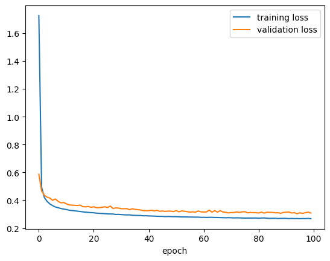
y_pred = model4.predict(X_test)
plt.hist(y_pred, color='green', alpha=.6)
plt.hist(y_test, color='blue', alpha=.6)
plt.legend(['prediction', 'truth'], loc='upper right')
plt.show()65/65 ━━━━━━━━━━━━━━━━━━━━ 0s 2ms/step
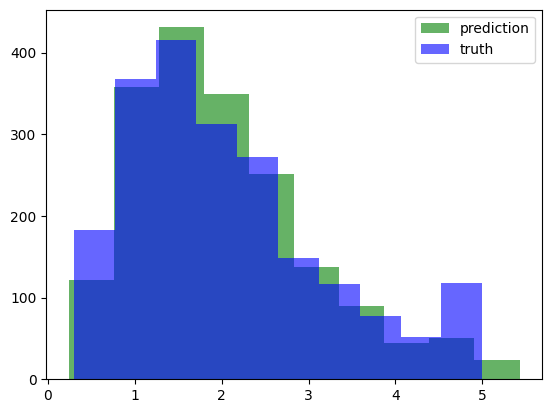
Klasifikasi Gambar dengan flatten
Gambar atau citra (image) adalah sekumpulan pixel yang disusun secara dua dimensi. Sejauh ini, neural network yang kita pelajari memiliki satu input layer yang “flat” atau datar. Sehingga, apabila kita ingin meng-input data citra ke dalam neural network, caranya adalah dengan flatten, yaitu data citra yang mula-mula dua dimensi itu disusun ulang menjadi satu dimensi.
Di Keras, ada layer istimewa untuk melakukan flatten untuk gambar berukuran a kali b pixel:
keras.layers.Flatten(input_shape = (a, b))
Ketika berurusan dengan data citra, layer ini menggantikan InputLayer yang biasa kita gunakan.
Persiapan dataset Fashion MNIST
Mari kita coba menggunakan dataset Fashion MNIST yang sudah tersedia dari Keras:
fashion_mnist = keras.datasets.fashion_mnist
(X_train_full, y_train_full), (X_test, y_test) = fashion_mnist.load_data()Downloading data from https://storage.googleapis.com/tensorflow/tf-keras-datasets/train-labels-idx1-ubyte.gz 29515/29515 ━━━━━━━━━━━━━━━━━━━━ 0s 0us/step Downloading data from https://storage.googleapis.com/tensorflow/tf-keras-datasets/train-images-idx3-ubyte.gz 26421880/26421880 ━━━━━━━━━━━━━━━━━━━━ 0s 0us/step Downloading data from https://storage.googleapis.com/tensorflow/tf-keras-datasets/t10k-labels-idx1-ubyte.gz 5148/5148 ━━━━━━━━━━━━━━━━━━━━ 0s 0us/step Downloading data from https://storage.googleapis.com/tensorflow/tf-keras-datasets/t10k-images-idx3-ubyte.gz 4422102/4422102 ━━━━━━━━━━━━━━━━━━━━ 0s 0us/step
print(f'X_train_full shape: {X_train_full.shape}')
print(f'y_train_full shape: {y_train_full.shape}')
print(f'X_test shape: {X_test.shape}')
print(f'y_test shape: {y_test.shape}')X_train_full shape: (60000, 28, 28)
y_train_full shape: (60000,)
X_test shape: (10000, 28, 28)
y_test shape: (10000,)X_train, X_val, y_train, y_val = train_test_split(
X_train_full, y_train_full, test_size=1/6, random_state=42
)
print(f'X_train shape: {X_train.shape}')
print(f'y_train shape: {y_train.shape}')
print(f'X_val shape: {X_val.shape}')
print(f'y_val shape: {y_val.shape}')
print(f'X_test shape: {X_test.shape}')
print(f'y_test shape: {y_test.shape}')X_train shape: (50000, 28, 28)
y_train shape: (50000,)
X_val shape: (10000, 28, 28)
y_val shape: (10000,)
X_test shape: (10000, 28, 28)
y_test shape: (10000,)X_train = X_train / 255
X_val = X_val / 255
X_test = X_test / 255Ada 10 kelas:
print(set(y_train)){np.uint8(0), np.uint8(1), np.uint8(2), np.uint8(3), np.uint8(4), np.uint8(5), np.uint8(6), np.uint8(7), np.uint8(8), np.uint8(9)}class_names = ["T-shirt/top", "Trouser", "Pullover", "Dress", "Coat",
"Sandal", "Shirt", "Sneaker", "Bag", "Ankle boot"]print(len(class_names))10Kita lihat salah satu gambarnya:
#@title Slider to look for some image examples {run: "auto"}
idx = 12103 #@param {type:"slider", min:0, max:49999, step:1}
plt.imshow(X_train[idx], cmap='gray')
plt.title(class_names[y_train[idx]])
plt.axis('OFF')
plt.show()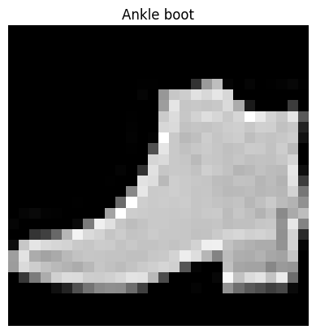
Menyusun neural network dan training
model5 = keras.Sequential(
[
keras.layers.Flatten(input_shape=(28,28)),
keras.layers.Dense(units=100, activation=keras.activations.relu),
keras.layers.Dense(units=50, activation=keras.activations.relu),
keras.layers.Dense(units=10, activation=keras.activations.softmax)
]
)model5.compile(
optimizer = keras.optimizers.Adam(learning_rate = 0.001),
loss = keras.losses.SparseCategoricalCrossentropy(),
metrics = [keras.metrics.CategoricalAccuracy()]
)model5.summary()Model: "sequential_4"
┏━━━━━━━━━━━━━━━━━━━━━━━━━━━━━━━━━┳━━━━━━━━━━━━━━━━━━━━━━━━┳━━━━━━━━━━━━━━━┓ ┃ Layer (type) ┃ Output Shape ┃ Param # ┃ ┡━━━━━━━━━━━━━━━━━━━━━━━━━━━━━━━━━╇━━━━━━━━━━━━━━━━━━━━━━━━╇━━━━━━━━━━━━━━━┩ │ flatten_3 (Flatten) │ (None, 784) │ 0 │ ├─────────────────────────────────┼────────────────────────┼───────────────┤ │ dense_12 (Dense) │ (None, 100) │ 78,500 │ ├─────────────────────────────────┼────────────────────────┼───────────────┤ │ dense_13 (Dense) │ (None, 50) │ 5,050 │ ├─────────────────────────────────┼────────────────────────┼───────────────┤ │ dense_14 (Dense) │ (None, 10) │ 510 │ └─────────────────────────────────┴────────────────────────┴───────────────┘
Total params: 84,060 (328.36 KB)
Trainable params: 84,060 (328.36 KB)
Non-trainable params: 0 (0.00 B)
history5 = model5.fit(
X_train, y_train, validation_data=(X_val, y_val),
epochs=50, batch_size=256
)Epoch 1/50 196/196 ━━━━━━━━━━━━━━━━━━━━ 3s 8ms/step - categorical_accuracy: 0.0701 - loss: 0.9699 - val_categorical_accuracy: 0.0708 - val_loss: 0.4785 Epoch 2/50 196/196 ━━━━━━━━━━━━━━━━━━━━ 2s 8ms/step - categorical_accuracy: 0.0557 - loss: 0.4452 - val_categorical_accuracy: 0.0696 - val_loss: 0.4183 Epoch 3/50 196/196 ━━━━━━━━━━━━━━━━━━━━ 1s 7ms/step - categorical_accuracy: 0.0741 - loss: 0.3899 - val_categorical_accuracy: 0.0664 - val_loss: 0.3901 Epoch 4/50 196/196 ━━━━━━━━━━━━━━━━━━━━ 3s 8ms/step - categorical_accuracy: 0.0567 - loss: 0.3662 - val_categorical_accuracy: 0.0683 - val_loss: 0.3663 Epoch 5/50 196/196 ━━━━━━━━━━━━━━━━━━━━ 3s 13ms/step - categorical_accuracy: 0.0654 - loss: 0.3346 - val_categorical_accuracy: 0.0676 - val_loss: 0.3551 Epoch 6/50 196/196 ━━━━━━━━━━━━━━━━━━━━ 5s 10ms/step - categorical_accuracy: 0.0714 - loss: 0.3244 - val_categorical_accuracy: 0.0687 - val_loss: 0.3429 Epoch 7/50 196/196 ━━━━━━━━━━━━━━━━━━━━ 2s 11ms/step - categorical_accuracy: 0.0571 - loss: 0.3054 - val_categorical_accuracy: 0.0680 - val_loss: 0.3388 Epoch 8/50 196/196 ━━━━━━━━━━━━━━━━━━━━ 2s 8ms/step - categorical_accuracy: 0.0583 - loss: 0.2967 - val_categorical_accuracy: 0.0691 - val_loss: 0.3395 Epoch 9/50 196/196 ━━━━━━━━━━━━━━━━━━━━ 3s 8ms/step - categorical_accuracy: 0.0595 - loss: 0.2840 - val_categorical_accuracy: 0.0686 - val_loss: 0.3192 Epoch 10/50 196/196 ━━━━━━━━━━━━━━━━━━━━ 3s 12ms/step - categorical_accuracy: 0.0586 - loss: 0.2682 - val_categorical_accuracy: 0.0683 - val_loss: 0.3311 Epoch 11/50 196/196 ━━━━━━━━━━━━━━━━━━━━ 2s 8ms/step - categorical_accuracy: 0.0674 - loss: 0.2619 - val_categorical_accuracy: 0.0688 - val_loss: 0.3219 Epoch 12/50 196/196 ━━━━━━━━━━━━━━━━━━━━ 3s 8ms/step - categorical_accuracy: 0.0584 - loss: 0.2571 - val_categorical_accuracy: 0.0678 - val_loss: 0.3108 Epoch 13/50 196/196 ━━━━━━━━━━━━━━━━━━━━ 2s 8ms/step - categorical_accuracy: 0.0722 - loss: 0.2527 - val_categorical_accuracy: 0.0698 - val_loss: 0.3328 Epoch 14/50 196/196 ━━━━━━━━━━━━━━━━━━━━ 2s 7ms/step - categorical_accuracy: 0.0646 - loss: 0.2458 - val_categorical_accuracy: 0.0681 - val_loss: 0.3122 Epoch 15/50 196/196 ━━━━━━━━━━━━━━━━━━━━ 1s 7ms/step - categorical_accuracy: 0.0577 - loss: 0.2397 - val_categorical_accuracy: 0.0686 - val_loss: 0.3181 Epoch 16/50 196/196 ━━━━━━━━━━━━━━━━━━━━ 3s 10ms/step - categorical_accuracy: 0.0652 - loss: 0.2329 - val_categorical_accuracy: 0.0688 - val_loss: 0.3078 Epoch 17/50 196/196 ━━━━━━━━━━━━━━━━━━━━ 2s 7ms/step - categorical_accuracy: 0.0643 - loss: 0.2208 - val_categorical_accuracy: 0.0676 - val_loss: 0.3171 Epoch 18/50 196/196 ━━━━━━━━━━━━━━━━━━━━ 3s 8ms/step - categorical_accuracy: 0.0606 - loss: 0.2227 - val_categorical_accuracy: 0.0694 - val_loss: 0.3229 Epoch 19/50 196/196 ━━━━━━━━━━━━━━━━━━━━ 1s 7ms/step - categorical_accuracy: 0.0638 - loss: 0.2134 - val_categorical_accuracy: 0.0704 - val_loss: 0.3293 Epoch 20/50 196/196 ━━━━━━━━━━━━━━━━━━━━ 3s 8ms/step - categorical_accuracy: 0.0658 - loss: 0.2137 - val_categorical_accuracy: 0.0678 - val_loss: 0.3176 Epoch 21/50 196/196 ━━━━━━━━━━━━━━━━━━━━ 3s 12ms/step - categorical_accuracy: 0.0599 - loss: 0.2048 - val_categorical_accuracy: 0.0683 - val_loss: 0.3172 Epoch 22/50 196/196 ━━━━━━━━━━━━━━━━━━━━ 2s 8ms/step - categorical_accuracy: 0.0650 - loss: 0.1980 - val_categorical_accuracy: 0.0672 - val_loss: 0.3147 Epoch 23/50 196/196 ━━━━━━━━━━━━━━━━━━━━ 2s 8ms/step - categorical_accuracy: 0.0616 - loss: 0.1944 - val_categorical_accuracy: 0.0682 - val_loss: 0.3229 Epoch 24/50 196/196 ━━━━━━━━━━━━━━━━━━━━ 3s 8ms/step - categorical_accuracy: 0.0630 - loss: 0.1895 - val_categorical_accuracy: 0.0675 - val_loss: 0.3599 Epoch 25/50 196/196 ━━━━━━━━━━━━━━━━━━━━ 2s 8ms/step - categorical_accuracy: 0.0631 - loss: 0.1947 - val_categorical_accuracy: 0.0691 - val_loss: 0.3424 Epoch 26/50 196/196 ━━━━━━━━━━━━━━━━━━━━ 2s 7ms/step - categorical_accuracy: 0.0609 - loss: 0.1853 - val_categorical_accuracy: 0.0690 - val_loss: 0.3237 Epoch 27/50 196/196 ━━━━━━━━━━━━━━━━━━━━ 2s 11ms/step - categorical_accuracy: 0.0690 - loss: 0.1816 - val_categorical_accuracy: 0.0691 - val_loss: 0.3355 Epoch 28/50 196/196 ━━━━━━━━━━━━━━━━━━━━ 2s 8ms/step - categorical_accuracy: 0.0559 - loss: 0.1784 - val_categorical_accuracy: 0.0688 - val_loss: 0.3406 Epoch 29/50 196/196 ━━━━━━━━━━━━━━━━━━━━ 1s 7ms/step - categorical_accuracy: 0.0709 - loss: 0.1721 - val_categorical_accuracy: 0.0691 - val_loss: 0.3395 Epoch 30/50 196/196 ━━━━━━━━━━━━━━━━━━━━ 3s 8ms/step - categorical_accuracy: 0.0650 - loss: 0.1664 - val_categorical_accuracy: 0.0692 - val_loss: 0.3663 Epoch 31/50 196/196 ━━━━━━━━━━━━━━━━━━━━ 2s 7ms/step - categorical_accuracy: 0.0633 - loss: 0.1687 - val_categorical_accuracy: 0.0690 - val_loss: 0.3456 Epoch 32/50 196/196 ━━━━━━━━━━━━━━━━━━━━ 3s 9ms/step - categorical_accuracy: 0.0683 - loss: 0.1583 - val_categorical_accuracy: 0.0677 - val_loss: 0.3478 Epoch 33/50 196/196 ━━━━━━━━━━━━━━━━━━━━ 3s 9ms/step - categorical_accuracy: 0.0703 - loss: 0.1638 - val_categorical_accuracy: 0.0684 - val_loss: 0.3615 Epoch 34/50 196/196 ━━━━━━━━━━━━━━━━━━━━ 2s 7ms/step - categorical_accuracy: 0.0618 - loss: 0.1530 - val_categorical_accuracy: 0.0692 - val_loss: 0.3703 Epoch 35/50 196/196 ━━━━━━━━━━━━━━━━━━━━ 2s 8ms/step - categorical_accuracy: 0.0676 - loss: 0.1509 - val_categorical_accuracy: 0.0673 - val_loss: 0.3660 Epoch 36/50 196/196 ━━━━━━━━━━━━━━━━━━━━ 2s 7ms/step - categorical_accuracy: 0.0688 - loss: 0.1524 - val_categorical_accuracy: 0.0674 - val_loss: 0.3491 Epoch 37/50 196/196 ━━━━━━━━━━━━━━━━━━━━ 2s 8ms/step - categorical_accuracy: 0.0684 - loss: 0.1445 - val_categorical_accuracy: 0.0688 - val_loss: 0.3403 Epoch 38/50 196/196 ━━━━━━━━━━━━━━━━━━━━ 5s 19ms/step - categorical_accuracy: 0.0636 - loss: 0.1438 - val_categorical_accuracy: 0.0689 - val_loss: 0.3721 Epoch 39/50 196/196 ━━━━━━━━━━━━━━━━━━━━ 3s 8ms/step - categorical_accuracy: 0.0637 - loss: 0.1415 - val_categorical_accuracy: 0.0683 - val_loss: 0.3592 Epoch 40/50 196/196 ━━━━━━━━━━━━━━━━━━━━ 2s 8ms/step - categorical_accuracy: 0.0617 - loss: 0.1399 - val_categorical_accuracy: 0.0686 - val_loss: 0.3710 Epoch 41/50 196/196 ━━━━━━━━━━━━━━━━━━━━ 1s 7ms/step - categorical_accuracy: 0.0617 - loss: 0.1386 - val_categorical_accuracy: 0.0684 - val_loss: 0.3868 Epoch 42/50 196/196 ━━━━━━━━━━━━━━━━━━━━ 3s 7ms/step - categorical_accuracy: 0.0685 - loss: 0.1320 - val_categorical_accuracy: 0.0675 - val_loss: 0.3928 Epoch 43/50 196/196 ━━━━━━━━━━━━━━━━━━━━ 2s 11ms/step - categorical_accuracy: 0.0664 - loss: 0.1346 - val_categorical_accuracy: 0.0682 - val_loss: 0.3956 Epoch 44/50 196/196 ━━━━━━━━━━━━━━━━━━━━ 2s 8ms/step - categorical_accuracy: 0.0685 - loss: 0.1229 - val_categorical_accuracy: 0.0674 - val_loss: 0.3762 Epoch 45/50 196/196 ━━━━━━━━━━━━━━━━━━━━ 2s 9ms/step - categorical_accuracy: 0.0620 - loss: 0.1255 - val_categorical_accuracy: 0.0696 - val_loss: 0.3801 Epoch 46/50 196/196 ━━━━━━━━━━━━━━━━━━━━ 2s 8ms/step - categorical_accuracy: 0.0705 - loss: 0.1233 - val_categorical_accuracy: 0.0691 - val_loss: 0.3947 Epoch 47/50 196/196 ━━━━━━━━━━━━━━━━━━━━ 2s 8ms/step - categorical_accuracy: 0.0719 - loss: 0.1198 - val_categorical_accuracy: 0.0688 - val_loss: 0.4037 Epoch 48/50 196/196 ━━━━━━━━━━━━━━━━━━━━ 3s 8ms/step - categorical_accuracy: 0.0612 - loss: 0.1143 - val_categorical_accuracy: 0.0694 - val_loss: 0.4114 Epoch 49/50 196/196 ━━━━━━━━━━━━━━━━━━━━ 3s 12ms/step - categorical_accuracy: 0.0598 - loss: 0.1191 - val_categorical_accuracy: 0.0695 - val_loss: 0.3991 Epoch 50/50 196/196 ━━━━━━━━━━━━━━━━━━━━ 2s 8ms/step - categorical_accuracy: 0.0743 - loss: 0.1145 - val_categorical_accuracy: 0.0694 - val_loss: 0.3972
pd.DataFrame(history5.history).to_csv("./keras_sequential_history5.csv", index=False)Silakan download kalau mau menyocokkan/membandingkan dengan modul: keras_sequential_history5.csv
history5_df = pd.read_csv("./keras_sequential_history5.csv")plt.plot(history5_df["loss"], label = "training loss")
plt.plot(history5_df["val_loss"], label = "validation loss")
plt.xlabel("epoch")
plt.legend()
plt.show()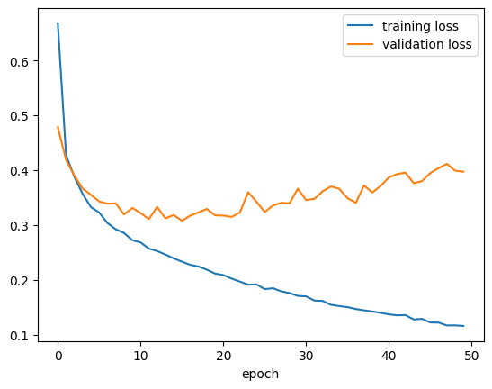
Hasil prediksi
y_pred = model5.predict(X_test)313/313 ━━━━━━━━━━━━━━━━━━━━ 1s 3ms/step
y_predarray([[3.89048516e-11, 4.46032236e-13, 1.15040265e-07, ...,
7.68356957e-04, 1.53650914e-09, 9.99195278e-01],
[1.14122786e-05, 1.14619886e-17, 9.99554217e-01, ...,
6.40274208e-26, 1.08185377e-20, 2.92538757e-20],
[6.54131643e-13, 9.99999940e-01, 2.02682177e-14, ...,
3.08884612e-27, 8.57785633e-17, 7.88850808e-22],
...,
[2.20215043e-07, 2.50604574e-14, 1.06251505e-08, ...,
2.62424783e-16, 9.99996841e-01, 1.48581980e-14],
[4.54307078e-11, 9.99999821e-01, 2.46371868e-12, ...,
2.12386693e-15, 2.25630886e-11, 1.52572101e-13],
[5.45784440e-09, 1.40065348e-09, 2.73625567e-08, ...,
1.97790158e-07, 7.04383538e-08, 1.70042716e-10]], dtype=float32)y_pred[123]array([3.7125845e-17, 3.0286391e-20, 5.5658371e-16, 7.8263640e-24,
6.0593184e-15, 1.0014137e-12, 1.4839321e-22, 1.1881163e-07,
1.8030655e-16, 9.9999982e-01], dtype=float32)np.argmax(y_pred[123])np.int64(9)Kita bisa melihat hasil prediksi:
#@title Slider to look for some prediction examples {run: "auto"}
idx = 4922 #@param {type:"slider", min:0, max:9999, step:1}
plt.imshow(X_test[idx], cmap='gray')
plt.title(
f"Predicted class: {class_names[int(np.argmax(y_pred[idx]))]}\n" +
f"True class: {class_names[y_test[idx]]}"
)
plt.axis('OFF')
plt.show()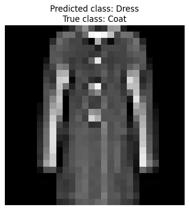
Pengantar CNN (Convolutional Neural Network)
Sebenarnya, menerima input gambar dengan teknik flatten itu kurang efektif.
Dengan dense layer, bahkan dua pixel yang sangat jauh itu juga terhubungkan, padahal seharusnya tidak berhubungan.
Karena itu juga, tidak ada penekanan hubungan antara dua pixel yang saling berdekatan.
Alangkah baiknya, ada teknik input gambar yang bisa mempertimbangkan bagaimana hubungan suatu pixel dengan pixel-pixel di sekitarnya saja, daripada dengan semua pixel.
Convolutional Neural Network (CNN) mencoba mengatasi hal ini. Ciri khasnya adalah adanya dua jenis layer baru:
convolution layer
pooling layer, biasanya max pooling
Kedua layer baru ini bersifat sparse, yaitu beberapa neuron terhubung dengan beberapa neuron saja, tidak dengan semuanya.
Gambar berikut ini membandingkan antara sparse layer dengan dense layer:
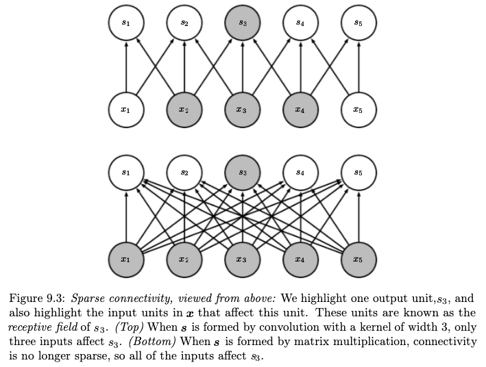
Sumber gambar: Goodfellow, et. al. (2016) hal. 337
Konsep convolution layer
Suatu convolution layer menghitung “konvolusi” (convolution).
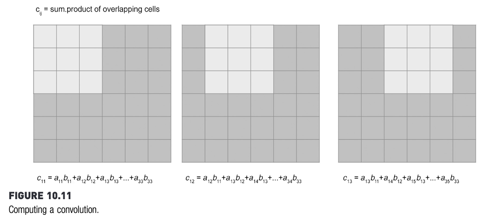
Sumber gambar: Kotu, hal. 325
Perhitungan konvolusi selalu melibatkan suatu “filter”, yang nilai-nilainya menjadi parameter (seperti weights and biases) yang terus di-update selama proses training.
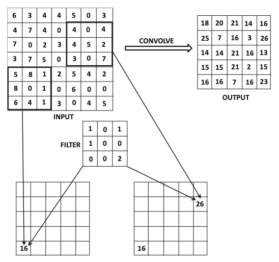
Sumber gambar: Aggarwal (2018) hal. 321
Contoh perhitungan menggunakan filter bisa dilihat di gambar berikut.
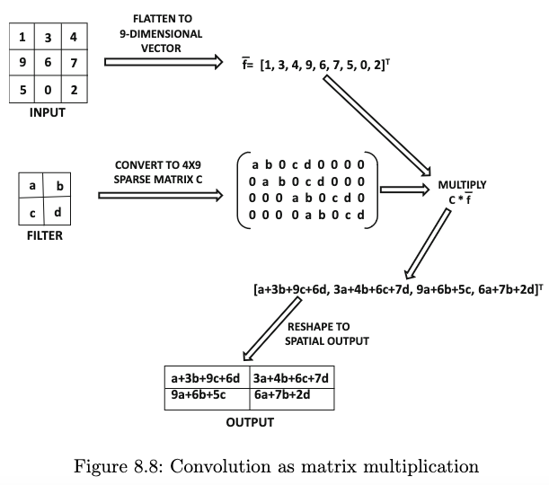
Sumber gambar: Aggarwal (2018) hal. 336
Ketika menghitung konvolusi, filter selalu digeser. Pergeseran filter ini sebenarnya tidak harus satu langkah. Bisa saja, misalnya, dua langkah. Banyaknya langkah ini disebut stride.
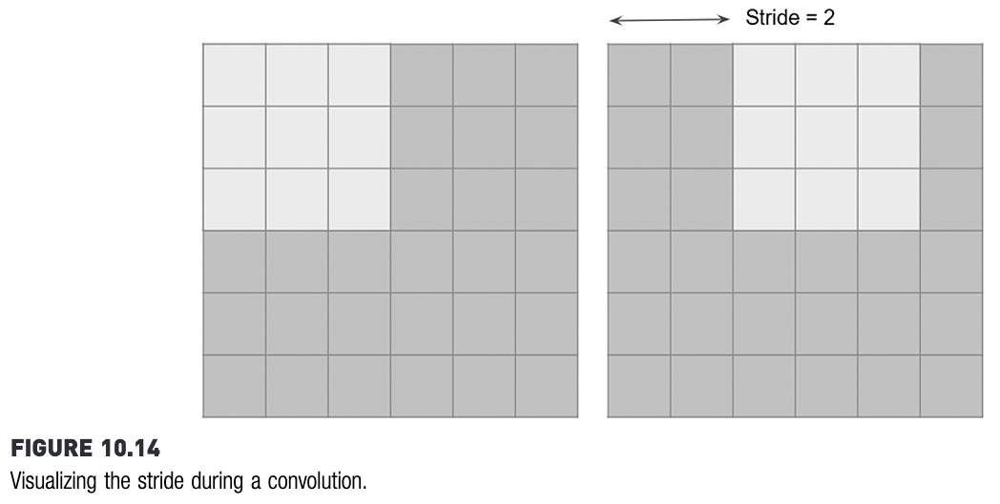
Sumber gambar: Kotu, hal. 328
Konsep pooling layer
Daripada menghitung konvolusi, pooling hanya menghitung statistik sederhana saja. Biasanya menghitung maksimum, yang disebut max pooling.
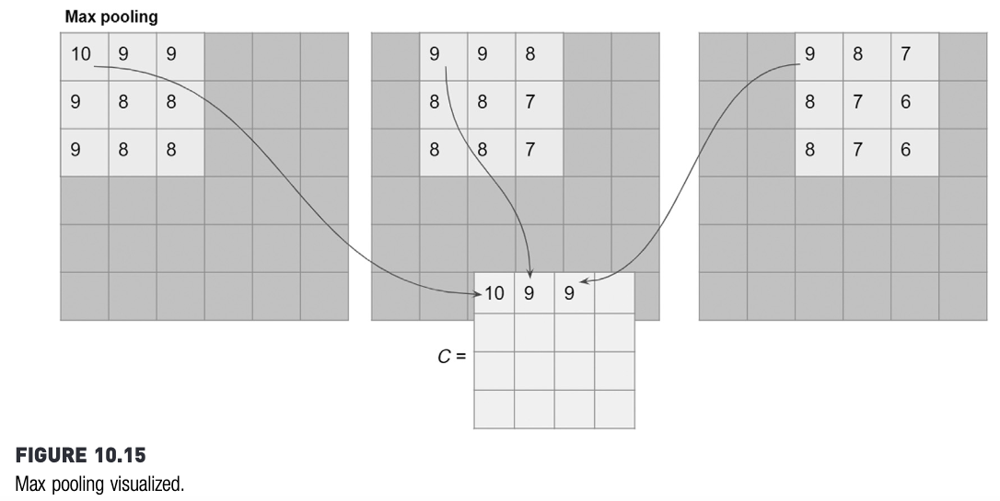
Sumber gambar: Kotu, hal. 328
LeNet-5: salah satu arsitektur CNN pertama
Note: aslinya, LeNet-5 menggunakan average pooling, yaitu menghitung rata-rata, tidak seperti max pooling yang memilih maksimum.
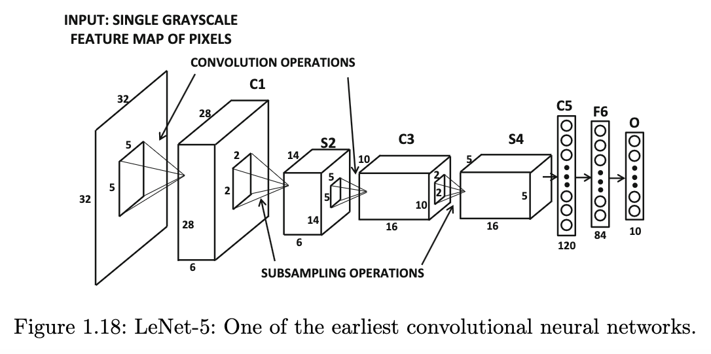
Sumber gambar: Aggarwal (2018) hal. 41
Arsitektur LeNet-5 menggunakan Keras bisa disusun sebagai berikut:
lenet5 = keras.Sequential()
lenet5.add(keras.layers.Conv2D(
input_shape = (32, 32, 1),
kernel_size = (5, 5),
filters = 6,
activation = keras.activations.sigmoid
)) # menghasilkan C1 di gambar: ukuran 28 x 28 x 6
lenet5.add(keras.layers.AveragePooling2D(
pool_size = (2, 2),
strides = 2
)) # menghasilkan S2 di gambar: ukuran 14 x 14 x 6
lenet5.add(keras.layers.Conv2D(
kernel_size = (5, 5),
filters = 16,
activation = keras.activations.sigmoid
)) # menghasilkan C3 di gambar: ukuran 10 x 10 x 16
lenet5.add(keras.layers.AveragePooling2D(
pool_size = (2, 2),
strides = 2
)) # menghasilkan S4 di gambar: ukuran 5 x 5 x 16
lenet5.add(keras.layers.Flatten())
# menjadi C5 di gambar, dengan 400 neuron
lenet5.add(keras.layers.Dense(
units = 120, activation = keras.activations.sigmoid
))
lenet5.add(keras.layers.Dense(
units = 84, activation = keras.activations.sigmoid
))
lenet5.add(keras.layers.Dense(
units = 10, activation = keras.activations.softmax
))/usr/local/lib/python3.11/dist-packages/keras/src/layers/convolutional/base_conv.py:107: UserWarning: Do not pass an `input_shape`/`input_dim` argument to a layer. When using Sequential models, prefer using an `Input(shape)` object as the first layer in the model instead.
super().__init__(activity_regularizer=activity_regularizer, **kwargs)keras.utils.plot_model(
lenet5,
show_shapes = True,
dpi=90,
show_layer_activations = True,
to_file = "keras_sequential_lenet5.png"
)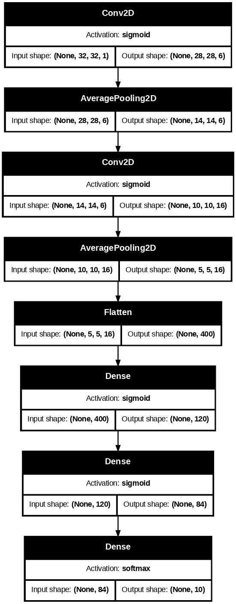
Referensi
Sumber gambar
Aggarwal, C. Charu. 2018. Neural Networks and Deep Learning: A Textbook. Edisi Pertama. Springer.
Goodfellow, Ian; Bengio, Yoshua; & Courville, Aaron. 2016. Deep Learning. MIT Press.
Kotu, Data Science Concepts and Practice